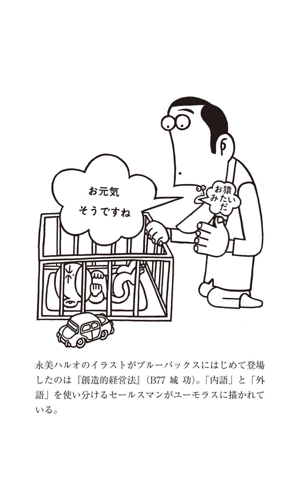
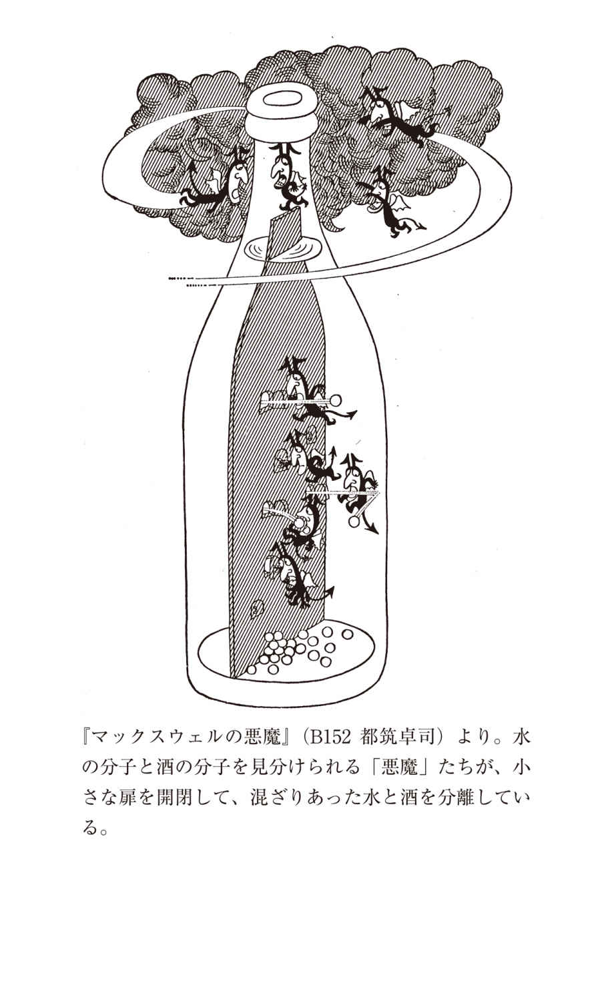
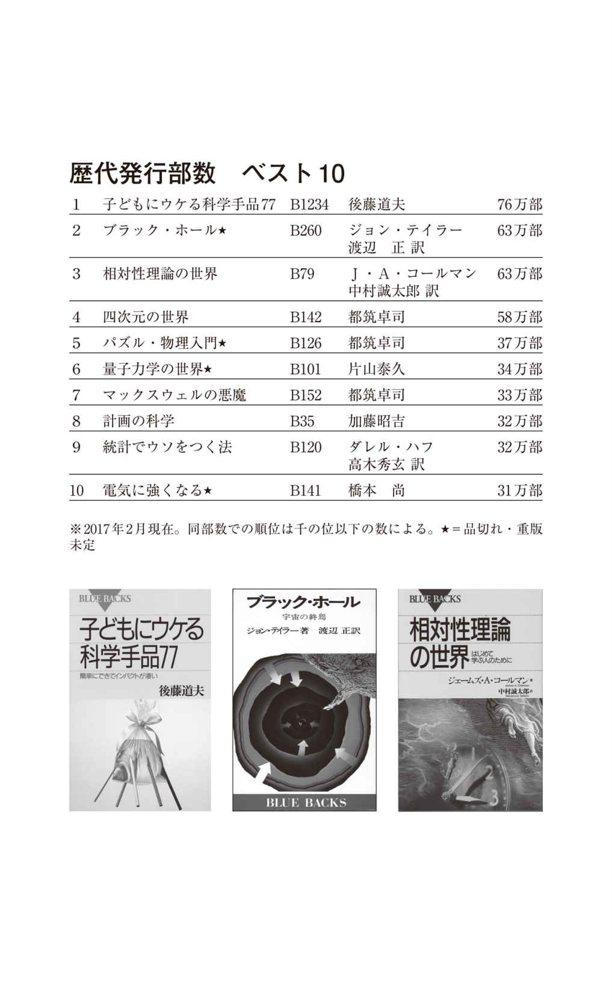
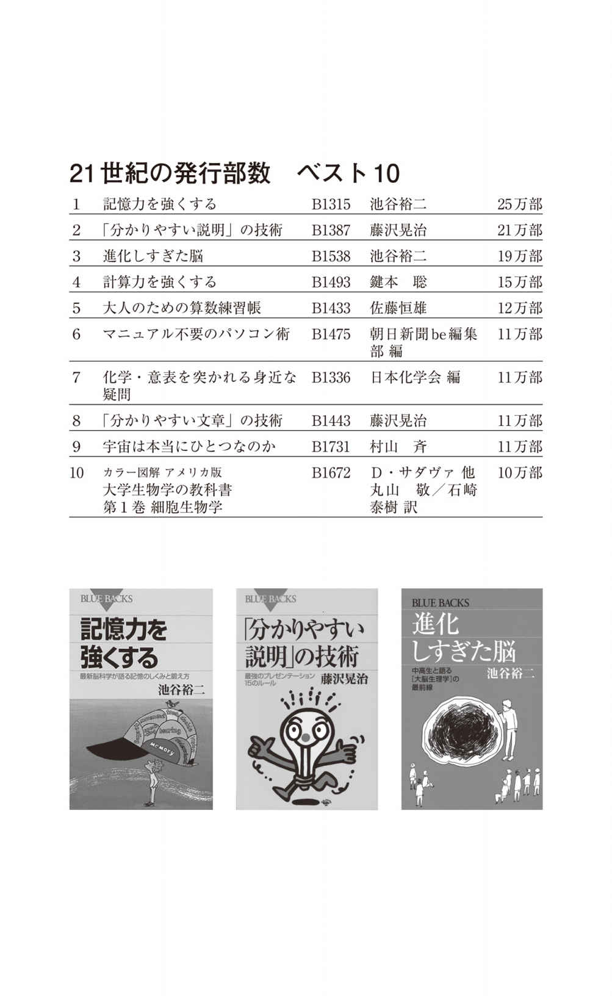
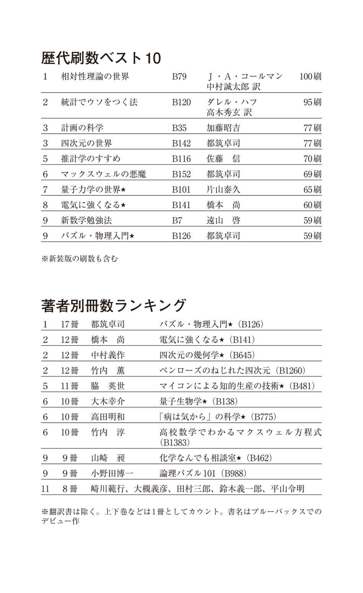
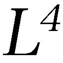
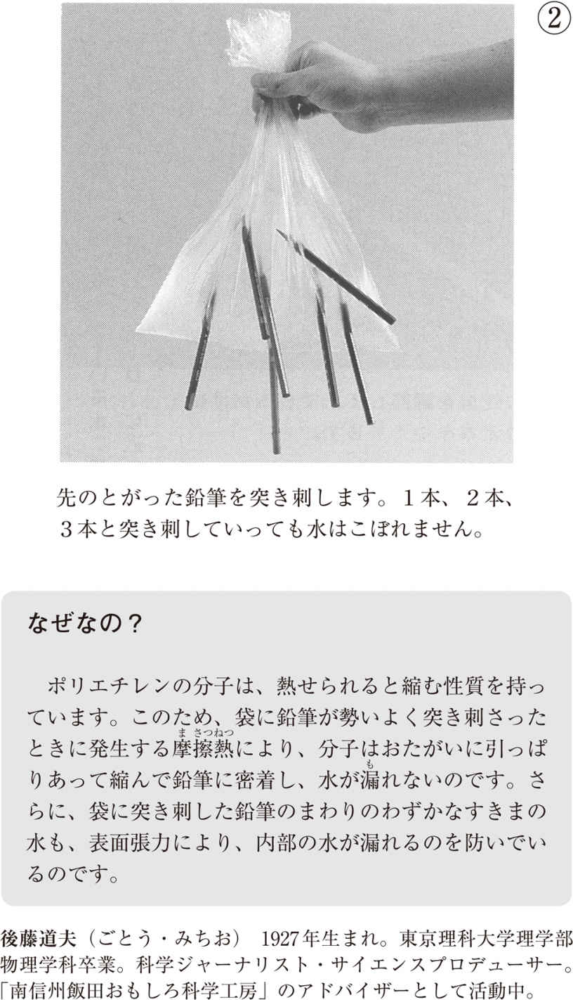
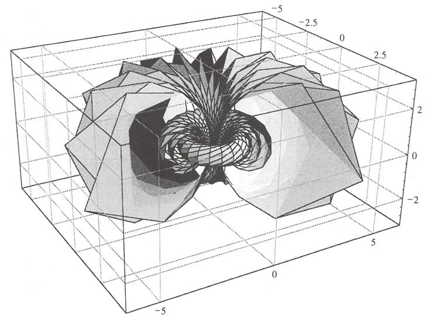

| ブルーバックス通巻２０００番小冊子 | |
| Unknown | |
| 講談社 (2017) | |
水深６５００メートルの深海に潜って未知の生物を探す研究者もいれば、地上４００キロメートルに浮かぶ宇宙ステーションで活動する研究者もいる。ペンと紙だけで理論と格闘する分野もあれば、何百人もの研究者が一丸となって、１周27 キロメートルもの巨大加速器で実験を行う科学もある。１ミリメートルの１０００分の１よりも小さな細胞小器官の働きを解き明かそうとする研究もあれば、何十万光年にも広がる銀河の謎を探る研究もある。ふつうに暮らしていたら出会うことのないような「すごい」人たちがいて、「すごい」研究があって、科学の世界は興味が尽きることがありません。
そんな科学の面白さを、専門家ではない一般の読者に伝えることを使命とするブルーバックスは、２０１７年、創刊から55 年目を迎え、刊行点数２０００点を達成しました。これまで長年にわたってシリーズをつづけることができたのは、ひとえに科学を楽しむ好奇心あふれる読者の皆様と、今や毎年のようにノーベル賞受賞者を輩出する日本の科学技術研究の層の厚さに支えられているからにほかなりません。
ブルーバックスを１ページめくるだけで、知らなかった科学の世界の扉が開く、これからもそんな本づくりを目指してまいります。
２０１７年２月 講談社ブルーバックス
目 次
著者が語る私とブルーバックス
『物理はなぜ不人気か』 小林 誠
『ブルーバックスのせいでサイエンス作家になってしまったオレ』 竹内 薫
『ブルーバックスという連鎖』 池谷裕二
『ブルーバックスによせて』 福岡伸一
『インフレーション理論、天文学的実証への期待』 佐藤勝彦
『超弦理論が究極の基本法則となる日には』 大栗博司
『「死なないやつら」とは何か』 長沼 毅
『科学者への夢を断った日』 山根一眞
私の本棚にあるブルーバックス
『ポケットサイズだからこそ』 上橋菜穂子
『私が「常備」する４書目』 佐藤 優
『「理系の知の世界」を知るための地図』 森田真生
『ブルーバックスから広がる想像力』 山崎直子
『立ち読み気分で手軽に楽しめる科学新書』 松尾貴史
『私にとってのブルーバックス』 松本 大
ブルーバックスを彩るイラスト
『ブルーバックス２０００番によせて』 永美ハルオ
国産初の連続テレビアニメ「鉄腕アトム」が放送を開始し、明くる年には東京オリンピックが開催される、そんな日本が希望と熱気に満ちていた１９６３年９月、「科学をあなたのポケットに」を発刊のことばとしてブルーバックスは創刊した。
有人宇宙船ボストーク１号に搭乗し、人類で初めて宇宙空間に飛んだソ連の宇宙飛行士ガガーリンが「地球は青かった」と言ったのが１９６１年。その言葉が人々の記憶にまだ新しく、ブルーは科学を表す象徴的な色ということで、シリーズ名称が決まった。現在も刊行している新書レーベルとしては、岩波新書（１９３８年創刊）、中公新書（１９６２年創刊）についで日本で３番目に長い歴史を持つ。
創刊第１冊目は『人工頭脳時代 』（Ｂ１ 菊池誠） 。まだコンピュータを電子計算機と呼んでいた当時、それを「人工頭脳」という言葉に置き換えて将来の可能性を論じている。前書きには「......電子計算機が進軍してきたら、一体どういうことになるのだろう。科学技術が進歩すればするほど、それは科学にたずさわる者だけの問題ではなくなってくる」とあり、すでに現代のＡＩにも通じる状況を見据えていたのには驚かされる。
翌64 年には、東海道新幹線が開通し、10 月10 日に東京オリンピックが開幕。ピーター・ヒッグスがヒッグス粒子を予言したのもこの年である。
絶版にならずに今でも「生き続けている」書目の中でシリーズ最長寿となる『計画の科学 』（Ｂ３５ 加藤昭吉） が出版されたのが65 年、初版から52 年を経て現在77 刷を数える。66 年から67 年にかけては、その後のシリーズの柱となる現代物理学の２大テーマから、それぞれベストセラーが生まれた。『相対性理論の世界 』（Ｂ７９ ジェームズ・Ａ・コールマン著 中村誠太郎訳） と『量子力学の世界 』（Ｂ１０１ 片山泰久） だ。前者はシリーズ最多の１００刷のロングセラーとして今も読まれている。後者は、日本人初のノーベル賞受賞者である湯川秀樹による序文が出色である。
「相対性原理は哲学的な色彩を帯びていた。それが多くの人の関心の的 となった理由の中の一番重要なものであった。しかし、量子力学は相対性原理にまさるとも、おとらぬ哲学的な問題を投げかけたのである。特にひとつの原因のひき起こす結果は、かならずしもひとつにきまっていないという不確定性は、私たちのものの考え方に深刻な影響をおよぼさざるをえないのである」
ヒッグス粒子が発見され、標準理論が完成してもなお残る現代物理学のミステリアスな魅力を象徴する一文に、当時の読者もきっと知的好奇心をかきたてられたに違いない。
物理学と並んで統計学もシリーズの定番テーマのひとつだが、その嚆 矢 となったのが『統計でウソをつく法 』（Ｂ１２０ ダレル・ハフ著 高木秀玄訳） 。68 年刊行で、以降、統計学をテーマにした書目は30 冊近くに上る。
同じ年、のちにシリーズ最多17 冊を手がけることになる都筑卓司が『パズル・物理入門 』（Ｂ１２６） でデビューする。その後、『四次元の世界 』（Ｂ１４２） 、『マックスウェルの悪魔 』（Ｂ１５２） 、『不確定性原理 』（Ｂ１５５）、『タイムマシンの話 』（Ｂ１７０） とベストセラーを量産し、著者累計３２５万部という異例の記録を作る。科学書といえば「堅苦しい、小難しい、読みにくい」というイメージを払拭するかのように、星飛雄馬の大リーグボールを題材にするなど巧みな解説と、親しみやすい語り口で読者を魅了した。
社会に目を転ずると、69 年に回転式ダイヤルの黒電話に代わり、プッシュホン電話が登場した。カラーテレビが急速に普及しだしたのもこの頃で、テレビ生産台数では日本が世界一の座に。ＧＮＰでも、当時の西ドイツを抜いて米国につぐ世界第２位の経済大国となり、戦後最長と言われたいざなぎ景気によって、日本の経済成長率は毎年10 ％を超える勢いだった。
しかしなんといっても、記憶に残るこの年の出来事と言えば、アポロ11 号による人類初の月面有人着陸だろう。１９６９年７月20 日（日本時間７月21 日）に「静かの海」に着陸、２人の宇宙飛行士が月面に降りる様子はＮＨＫで衛星生中継され、日本中がテレビ画面に釘付けになった。
71 年にはソ連の火星探査機マルス２号が火星に到達（衝突したとされる）、72 年には米国の木星探査機パイオニア10 号が打ち上げられ、76 年にはバイキング１号が火星着陸を果たし、人類は初めて火星の風景を見ることになる。
日本では、70 年に東京大学宇宙航空研究所によって、初の国産人工衛星「おおすみ」が打ち上げられ、延べ入場者数が６４００万人を超えた大阪万博（日本万国博覧会）が開催される。人気パビリオンのひとつであったアメリカ館では、アポロ12 号の持ち帰った「月の石」を見るために長蛇の列ができ、一方、ソ連館でも展示の目玉はソユーズなどの宇宙船。当時の冷戦下における米ソの激しい宇宙開発競争を表すかのような光景だった。
74 年には宇宙戦争を舞台にしたテレビアニメ「宇宙戦艦ヤマト」が放送を開始。松本零士のイラストが表紙を飾った『相対論的宇宙論 』（Ｂ２４１ 佐藤文隆／松田卓也） が刊行されたのもこの年だ。科学技術の進歩によって、宇宙の存在が身近に感じられるようになり、宇宙論が科学書の定番テーマのひとつとなっていく。
当時の読者の宇宙への関心の高さをもっとも表したのは『ブラック・ホール 』（Ｂ２６０ ジョン・テイラー著 渡辺正訳） だろう。発売半年で45 万部を突破し、最終的に累計部数歴代２位となる63 万部のベストセラーとなった。装幀カバーに記された内容紹介文には「宇宙の暗い落し穴」「宇宙は刻一刻ブラック・ホールに占領され」とあり、物質どころか光さえ脱出することができない強い重力を持つ天体ブラックホールは、当時はまだ理論的に予想されるだけで観測はされていなかったものの、人々の興味を駆り立てるには十分な宇宙の不思議のひとつであった。
70 年代はまた、コンピュータが身近になりはじめた時代でもあった。コンピュータと言えば、まだＩＢＭや日立のマシンがビルのワンフロアを占領するようななかにあって、個人向けの卓上コンピュータが登場する。パソコンという言葉はまだなく、マイクロコンピュータを略したマイコンという名称で呼ばれていた。75 年にはマイクロソフトが、76 年にはアップルコンピュータが相次いで設立され、「大型計算機から個人で使うコンピュータへ」という考え方が生まれる。『マイ・コンピュータ入門 』（Ｂ３１３ 安田寿明） は、そんな時代の流れの中で生まれたベストセラーだ。「コンピュータはあなたにもつくれる」というサブタイトルで、自分用コンピュータの組み立てを提案、発売半年で17 万部を記録した。
81 年、ブルーバックスの名著のひとつといえる『クォーク 』（Ｂ４８０） が刊行される。著者は、２００８年に「自発的対称性の破れ」の理論などで、小林誠、益川敏英とともにノーベル物理学賞を受賞することになる南部陽一郎。「10 年後の物理を知りたければ南部の論文を読め」と言われるほど多くの素粒子理論のおおもとになる業績を上げてきた著者が、素粒子物理学の発展をたどりながらそのエッセンスを解説している。「まえがき」から一部分を抜粋しよう。
「陽子や中間子はもはや素粒子ではなく、その代わりにクォークが登場しました。そればかりでなく、今まで関係のないものと見なされていた各種の力も統一される可能性が生まれました。さらにおどろくべきことは、極大の世界である宇宙全体の歴史が極小の世界の問題と切りはなせなくなったことです」
力の統一、宇宙の根源と素粒子。このテーマは、その後ブルーバックスの物理分野の大きな柱となっていく。
ワトソンとクリックによってＤＮＡの二重らせん構造が解明されたのが１９５３年。その後、生命現象を分子レベルで研究する分子生物学が世界の潮流となり、遺伝の仕組みが解明され始める。70 年代に入ると遺伝子組換え技術など遺伝子工学が発展し、バイオテクノロジーという言葉も生まれた。80 年代には、生命の究極に分け入り始めた科学の新しい発見や技術の進歩が、新聞やテレビで頻繁に紹介されるようになった。そうしたなかにあって登場したのが、分子遺伝学の最新の知見を紹介した82 年刊行の『遺伝子についての50 の基礎知識 』（Ｂ５０４ 川上正也） 、そして「生命の設計図」であるＤＮＡについて網羅的に解説した84 年刊行の『ＤＮＡ学のすすめ 』（Ｂ５８２ 柳田充弘） だ。
前者の前書きには「ここ数年間に進歩した遺伝子科学は、私たちの思想に重要な問いかけをはじめているし、遺伝子操作技術も、人間の生活を少なからず変更させる可能性を秘めている。このような時期にあって、私たちは遺伝子科学の功罪を冷静に判断し、その進路を考えていかなければならなくなった」とある。クローン動物、遺伝子組換え作物、デザイナーベイビー、遺伝子治療など、将来の可能性と問題にいち早く言及していた。この２冊が、今ではブルーバックスの柱のひとつとなる分子生物学分野の端緒となった。
分子レベルで生命の謎を探る──新たな時代の生命科学の魅力に世の人々が注目するようになった大きなきっかけのひとつが、87 年12 月の、利根川進によるノーベル生理学・医学賞受賞であった。きわめて多岐にわたる抗原に対し、多様な抗体遺伝子が体内で再構成される理論の実証によって、遺伝学や免疫学の進展に貢献したその成果の一端は、同年３月に刊行されていた『免疫とはなにか 』（Ｂ６８１ 野本亀久雄） でも紹介されており、同書はまたたく間に10 万部を超えるベストセラーとなった。
生命科学への人々の関心は、やがて脳へと広がりを見せる。85 年刊行の『脳の手帖 』（Ｂ６０５ 久保田競他） は、今日までつづく脳ブームのさきがけとなった一冊だ。この年には、科学技術をテーマとするつくば科学万博（国際科学技術博覧会）が開かれた。講談社もパビリオンを出展し、その愛称は「講談社ブレインハウス」。人間の脳の１００万倍というスケールで作った円筒形の建物の天井には、ニューロンを模してＬＥＤやグラスファイバーなどをはりめぐらし、来場者がさながら脳内探検ができるような趣向を凝らした。
脳への関心の高まりを如実に示したのが、翻訳書としてはシリーズ初の上下２巻構成で87 年に登場した、カラー版『脳の探検（上・下） 』（Ｂ６９９、７００ Ｆ・Ｅ・ブルーム他著 久保田競監訳） である。上下巻あわせて６００ページを超える大部が、累計14 万部を突破するベストセラーとなった。２００４年には、改訂版にあたる『新・脳の探検（上・下） 』（Ｂ１４３１、１４３２ 中村克樹／久保田競監訳） も刊行されている。
80 年代に分子生物学の輝かしい成果を示した利根川が、のちに脳科学の世界へと転身した事実も興味深い。その利根川とブルーバックスとの出会いは、通巻２０００番を目前に控えた２０１６年末に、脳をテーマとした書目で訪れる。
１月に昭和天皇が崩御し、元号が「平成」へと変わった89 年は、12 月29 日に日経平均株価が史上最高値をつけたのちにバブル経済の崩壊へといたる、激動の時代への画期となった。この年の９月、「硬軟取り混ぜて科学する」ブルーバックスの真骨頂を示すような名著２冊が、同時刊行されている。ユニークな書名が話題をよび、２００９年には新装版も刊行された『イカはしゃべるし、空も飛ぶ 』（Ｂ７９１ 奥谷喬司） と、２００２年にノーベル物理学賞を受賞する小柴昌俊の初めての著書『ニュートリノ天文学の誕生 』（Ｂ７９２） である。
小柴は、同書執筆の動機を「まえがき」でこう書いている。
「日本で観測方法を確立することにより、この二年間に誕生したニュートリノ天体物理学という新しい基礎科学の分野について、特に若い人たちに語りかけたいという気持ちが強かった」
日本発のこの新しい学問はやがて、小柴自身と門下生である梶田隆章にノーベル賞受賞という栄誉をもたらすこととなり、現在もなお、ホットな研究分野でありつづけている。
ブルーバックス「発刊のことば」には、「類書にない特色」として「科学はむずかしいという先入観を改める表現と構成」が挙げられている。90 年代を迎えたブルーバックスは、関心領域が多様化する読者の興味をより惹きつけ、科学をより楽しんでもらうために、新たな表現と構成を模索しはじめる。そのひとつが、パソコンの普及とともに充実の一途をたどったデジタル環境を活用することだった。
92 年に刊行された『パソコンで遊ぶ物理シミュレーション 』（Ｂ９２４ 神原武志他） では、実際に実験することは困難な量子力学的現象や、カオス、フラクタルといった最先端のトピックスについて、独自のプログラムでパソコン画面上に再現・体験できる構成が採用されている。別売ながら、それらプログラムを収録したフロッピーディスクを用意するなど、紙媒体とデジタル媒体を融合する試みの先駆けとなる一冊だった。
創刊32 年目にあたる94 年１月に刊行された通巻１０００番は、『科学・あの話題はどこにいった 』（大浜一之） 。１０００番到達の節目に大輪の花を咲かせてくれたのが『マンガ・微積分入門 』（Ｂ１００３ 岡部恒治著 藤岡文世絵） で、発売直後に10 万部を突破、累計では20 万部に迫るベスト＆ロングセラーとなった。本書の成功により、マンガ表現の魅力と威力を認識したブルーバックスではこれ以降、20 冊を超えるマンガ企画が刊行されていくことになる。
同年、ブルーバックスは一年間で２１０万部を売り上げ、通巻１０００番を迎えた記念すべき年を史上最高の成績で飾った。
翌１９９５年、前年10 月にワイルズによって証明され、実に３６０年にわたって論争のつづいていた「フェルマーの最終定理」に決着がつけられたことを受け、『フェルマーの大定理が解けた！ 』（Ｂ１０７４ 足立恒雄） が緊急刊行される。初版４万部があっという間に店頭からなくなり、すぐさま増刷がかかる反響ぶりだった。
同じ95 年には、『図解・わかる電子回路 』（Ｂ１０８４ 加藤肇／見城尚志／高橋久） も５万部を超えるベストセラーとなり、これを機に、「図解シリーズ」が充実していく。２０００年代にはカラー図解化も進み、マンガと並んで、「科学はむずかしいという先入観を改める表現と構成」の新たな発見となった。
人類史上初となる核兵器が日本に使用されてから51 年目の夏、96 年７月に「一瞬無差別大量殺戮」兵器誕生にいたる理論構築と開発の全歴史を克明に描いた『原子爆弾 』（Ｂ１１２８） が刊行された。４７０ページを超えるこの大著の著者は、のちに『宇宙のからくり 』（Ｂ１２２０） で講談社科学出版賞を受賞する山田克哉である。同書をはじめ、『光と電気のからくり 』（Ｂ１２５９） や『真空のからくり 』（Ｂ１８３６） など、「からくり」シリーズの熱血解説で人気を博す山田は、ブルーバックスデビュー作となった『原子爆弾』の「まえがき」でこう書いている。
「確かに放射能は恐い。しかし原子力が現存する以上、恐いからといって手をこまぬいているわけにはいかないだろう。我々の人体が直接放射能を感ずることができないからこそ余計に原子力に関する基礎知識が要求されると筆者は思う」
99 年のＪＣＯ臨界事故や２０１１年の福島第一原子力発電所事故の際に、この指摘を思い返した読者も多くいたことだろう。
97 年、日進月歩の勢いで伸展する生命科学の分野から、世界中を驚愕させる一大ニュースが舞い込んだ。世界初のクローン羊、「ドリー」の誕生である。ヒトが手にした生命を操作する技術が〝神の領域〟に足を踏み入れた事実は、倫理面を含むさまざまな議論を巻き起こすこととなった。これ以降、２００３年のヒトゲノム計画完了などのビッグトピックが相次ぎ、生命科学はブルーバックスの主要なテーマとして、多くの読者の関心を惹 きつけていく。
この97 年は、ブルーバックスにとっても大きな画期を成す年であった。新書史上初めてとなる、ＣＤ‐ＲＯＭを添付した『パソコンで見る複雑系・カオス・量子 』（Ｂ１１６０ 科学シミュレーション研究会） を刊行したのである。直径８㎝のシングルＣＤサイズのＣＤ‐ＲＯＭを綴 じ込んだ同書は、Ｗｉｎｄｏｗｓの普及でパソコンに親しみ始めていた読者から大きく支持された。その後の３年間で10 冊以上刊行されることになる、ＣＤ‐ＲＯＭ付きシリーズの先鞭をつけるものであった。
98 年に刊行された『英語リスニング科学的上達法 』（Ｂ１２０６ 山田恒夫／足立隆弘／ＡＴＲ人間情報通信研究所） では、デジタル環境との融合をさらに推し進め、インターネットを活用する試みがなされている。ＣＤ‐ＲＯＭに収録されたリスニングテストの結果を同書特設サイトに送信することで採点を受けられるしくみは、発売当日の新聞紙面で「講談社 オンラインで英語学習サービスを開始」と報じられるほど、インパクトの大きいものであった。
同年11 月、現時点でブルーバックス史上最高のヒット作である『子どもにウケる科学手品77 』（Ｂ１２３４） が刊行される。著者の後藤道夫は、各地で「親子科学教室」を指導し、テレビ出演も多くこなすなど、「実験おじさん」として全国の子どもたちから絶大な人気を誇っていた。
本書執筆の目的について、アインシュタインもエジソンも、科学の素養は子どもの頃の親子のふれあいの中で培われたというエピソードを引きつつ、「日々の親子のふれあいの中で、子どもに科学の不思議さ、楽しさ、面白さを知ってもらうための材料を、あなたにこっそり提供する」ことだと述懐している。
「簡単にできてインパクトが凄い」と副題にあるとおり、コップやストロー、ポリ袋など、身近な素材で誰でも実演できる手軽さが話題をよび、テレビや雑誌で繰り返し取り上げられるなど社会現象を巻き起こした同書は、累計76 万部を超える記録的ベストセラーとなった。
欧州連合の加盟国間で新通貨「ユーロ」が導入された99 年、藤沢晃治のデビュー作『「分かりやすい表現」の技術 』（Ｂ１２４５） が刊行される。19 万部に迫るベストセラーとなった同書を皮切りに、計７著作で累計65 万部を達成した藤沢は、21 世紀のブルーバックスを代表する著者の一人となった。
同じ年、のちに日本を代表するサイエンス作家となる竹内薫も、ブルーバックスでの第１作を発表している。現代物理学の雄ロジャー・ペンローズの理論を通して、相対性理論と量子力学の統合の可能性を探った『ペンローズのねじれた四次元 』（Ｂ１２６０） である。軽妙な文体と、随所に対話調のコラムを挟んだ構成の妙とで、難解なテーマを読み通させる迫力を有した快作であった。
同年11 月には、日付に使われるすべての数字が奇数という、数論好きにはたまらない一日が訪れている（１９９９年11 月19 日）。ちなみに、この次に奇数だけで日付が構成されるのは、実に32 世紀のことで、３１１１年１月１日まで待たねばならない。そのとき、ブルーバックスはいったい、通巻何番に到達していることだろう。
99 年から２０００年へと切り替わる時期、世間は「２０００年問題」に頭を悩ませていた。90 年代半ばに急速に普及したパソコンの内部では、日付を扱う際に西暦の下二桁だけを使用しており、「00 」となった瞬間に誤作動を起こすことが心配されたのである。ＣＤ‐ＲＯＭ付き書籍の刊行やインターネットの活用でデジタル環境を無視できないシリーズとなっていたブルーバックス編集部でも大いに案じられた事態だったが、目立ったトラブルに見舞われることなく、ミレニアムを迎えることができた。
マクロな科学現象としては太陽活動の黒点極大期を迎える一方、国内における技術革新としてＢＳデジタル衛星放送が開始された２０００年、ブルーバックスは通巻１３１４番を刊行して一年を締めくくった。
20 世紀最後に刊行された書目は、『 20 世紀物理はアインシュタインとともに 』。シリーズ２番目の長寿を誇るロングセラー『相対性理論の世界』の訳者であり、湯川秀樹博士の最初の直弟子としても知られる中村誠太郎の、集大成となる一冊であった。
お父さんの通勤は自家用飛行機で、お母さんの家事はロボットまかせ、子どもたちはテレビの中のコンピュータ先生の授業を受ける。街には空中歩道が張りめぐらされ、原子力ロケットで宇宙旅行に出かけるのもあたりまえ──。
ブルーバックスが創刊された１９６０年代、人々が思い描く21 世紀の未来予想図は、たとえばこのようなものだった。「21 世紀」という言葉には、それだけで科学技術の華々しい進歩を連想させる響きがあった。では、現実の21 世紀はどのように幕を開けたのだろうか。21 世紀の「科学」は、ブルーバックスにはどのように映し出されているだろうか。
２００１年１月、新世紀最初に刊行された５点のうちの一冊が、早くも21 世紀のブルーバックスを代表する作品となった。『記憶力を強くする 』（Ｂ１３１５ 池谷裕二） 。タクシーに乗って行き先を告げると、たいていの運転手は地図を見ずに車を走らせる。まるで頭の中に複雑な地図がすべて入っているように。彼らの脳を解析してみると、ある部分が一般の人よりも大きく、しかもベテランの運転手ほどそれが顕著であった。この驚くべき研究を出発点に、「記憶」を通して見えてくる脳の不思議をスリリングに抉 りだし、「記憶は未来の自分に贈るメッセージです」という鮮烈な言葉で読者の心をつかむ池谷の筆力は、これが初めての一般向け書籍の執筆とは思えず、従来の理系書の文体の枠組みを超えていた。同書は25 万部を記録するベストセラーとなり、これは21 世紀のブルーバックスでは最大部数である（２０１７年１月現在）。以後も池谷は次々とヒット作を生み出し、20 世紀の都筑卓司のように21 世紀のブルーバックスを牽引する書き手となっていく。もっとも、今世紀最大のヒットが今世紀最初の書目であることは、編集部にとって越えるべき「宿題」といえるのかもしれないが──。
もう一冊、同じ月に刊行された『科学者は神を信じられるか 』（Ｂ１３１８ Ｊ・ポーキングホーン著 小野寺一清訳） は異色作である。「神」がタイトルになること自体、ブルーバックスとしては異例のことである。著者のポーキングホーンは量子力学の創始者のひとりディラックに直接学んだ理論物理学者にして、英国国教会の司祭。科学と宗教は対立概念とみなされがちだが、彼はどちらかを排するのではなく「世界を理解するには科学と宗教のどちらも必要だ」と説く。それは言い換えれば、科学だけでは世界は理解できないということである。かつて「科学万能時代」の代名詞だった21 世紀の初頭に、このようなブルーバックスが出たことは暗示的ともいえる。この年、９月10 日には日本で初めてＢＳＥを発症した牛が見つかって、いわゆる狂牛病騒動が起こり、人間が生命を弄 んだ報いとの見方もされた。そして９月11 日には、狂信的イスラム信徒たちによるアメリカ同時多発テロ事件が発生する。いずれも「神と人間」という命題に直面せざるをえない事件だった。21 世紀のはじまりは、かつて夢想されたバラ色ではなく、ややくすんだ、内省的な色合いを帯びていた。
世紀の変わり目は、出版界では各社がこぞって新書を創刊した時期でもあった。いわゆる「新書戦争」の勃発である。しかし、洪水のように書店に並ぶそれらのタイトルも、多くが「内向き」だった。ベストセラーになるテーマは「私はどう生きたらよいか」という問いに答えるいわゆる「自己啓発もの」、もしくは「脳」がほとんどであり、つまり関心は自身の内側に向いていた。ブルーバックスでの池谷のブレイクも、そうした風潮の中で説得力ある「脳」が語られていたからかもしれない。
だがブルーバックスは02 年、往年の都筑卓司の一連の著作６点を新装版として次々に刊行し、存在感を示した。『四次元の世界（新装版） 』（Ｂ１３８０） 、『マックスウェルの悪魔（新装版） 』（Ｂ１３８４） 、『不確定性原理（新装版） 』（Ｂ１３８５） 、『タイムマシンの話（新装版） 』（Ｂ１３８８） など、いずれも未知の世界への好奇心をかきたてるという意味で、新書らしい新書である。これらとの出会いによって科学を志したという研究者の声も、実によく耳にするところである。
この年には、ブルーバックスの新たな「定番」となるシリーズも根づきはじめている。『高校数学でわかるマクスウェル方程式 』（Ｂ１３８３） の竹内淳は、このあと『高校数学でわかるシュレディンガー方程式 』（Ｂ１４７０） 、『高校数学でわかる半導体の原理 』（Ｂ１５４５） 、『高校数学でわかるボルツマンの原理 』（Ｂ１６２０） 、『高校数学でわかるフーリエ変換 』（Ｂ１６５７） など、９冊もの「高校数学でわかる」シリーズでヒット作を連発し、ブルーバックスになくてはならない柱となった。また、藤沢晃治の「分かりやすい」シリーズの２作目『「分かりやすい説明」の技術 』（Ｂ１３８７） は21 万部を売り上げ、同シリーズの最高部数を記録、人気を不動のものとした。
さらに同じ年、生命科学の分野でも傑作が生まれた。『ミトコンドリア・ミステリー 』（Ｂ１３９１ 林純一） は、「ミトコンドリアＤＮＡの異常はがんを誘発する」という定説を独自の研究によって覆す衝撃的な内容で、翌03 年の講談社科学出版賞を受賞した。同書を自身にとって「学位をとって25 年目の、新たな学位論文」という林は現在も、ミトコンドリアを相手に、がん転移の抑制薬の開発などをめざして研究を続けている。
同年の『パズルでひらめく補助線の幾何学 』（Ｂ１４１９ 中村義作） は、難しい幾何の問題が、うまく補助線を１本引くだけで、魔法のように解けてしまう快感が味わえる本。中村は現在までに計12 冊のブルーバックスを書いていて（共著を含む）、これは都筑卓司の17 冊に次ぎ、橋本尚（『電気に強くなる 』Ｂ１４１ など）と並んで多い（翻訳や監修も含めると竹内薫が13 冊）。
新書ブームは大人たちを、むかし学校で習ったことをもう一度「教養」として学びなおしたいという気分にさせた。04 年の『大人のための算数練習帳 』（Ｂ１４３３ 佐藤恒雄） も算数を学びなおしたい大人の心をとらえて12 万部のヒット。以後、「大人のための～」はブルーバックスでは「使える」フレーズとなり、６冊の書名に用いられる。また同年には「分かりやすい」シリーズの第３弾『「分かりやすい文章」の技術 』（Ｂ１４４３ 藤沢晃治） も11 万部を記録した。
翌05 年は、生命科学系で２つの大きな成果がもたらされた。『ＤＮＡ（上・下） 』（Ｂ１４７２、１４７３ ジェームス・Ｄ・ワトソン／アンドリュー・ベリー著 青木薫訳） は、１９６２年にＤＮＡ二重らせん構造の発見でフランシス・クリックとともにノーベル生理学・医学賞を受賞したワトソンが、ライターの協力を得て発見に至るまでの経緯をみずから明かし、この発見が人類に何をもたらすのかを考察したもの。そのこと自体に大きな価値があるが、迫真のドキュメントとしても、遺伝子についての基礎的な入門書としても秀逸である。的確で流麗な訳文も見逃せない。理学博士（理論物理学）にして理系書翻訳の第一人者・青木は、ブルーバックスでも10 冊の訳書（監訳を含む）がある。
もうひとつの成果が『プリオン説はほんとうか？ 』（Ｂ１５０４ 福岡伸一） 。遺伝子を持たないタンパク質、プリオンには感染性があり、これがＢＳＥ（狂牛病）の発生源にもなっているとするプリオン説を提唱した米国のスタンリー・プルシナーは、１９９７年にノーベル生理学・医学賞を受賞した。これに対して、プリオン説はいまだに不完全な仮説であり、説明できない不可解な実験データも多いと異議申し立てをしたのが本書である。もしプリオン説が誤りなら、異常プリオンが生じたウシの脳や脊髄などを除去しても安全性は確保されず、狂牛病対策は根底から見直しを迫られる。福岡の問題提起は大きな波紋を呼び、ブルーバックスが社会的にも注目された珍しいケースとなった。その後、プリオン説が否定されたわけではないが、この複雑な問題を読者の知的好奇心を刺激しながら明快に説明してみせた福岡は第22 回講談社科学出版賞を受賞。そのたぐいまれな筆力はのちに、70 万部を超えるベストセラーとなる『生物と無生物のあいだ』（講談社現代新書）で大きく花開くことになった。
こうして見ても21 世紀序盤のブルーバックスは生命科学分野の話題作が目立つが、一方で05 年は『計算力を強くする 』（Ｂ１４９３ 鍵本聡） が15 万部のヒットを記録。ふつうなら数分かかる計算が数秒でクリアできる驚きの技の数々を披露し、鍵本は前出の佐藤恒雄とともに「数」の分野をささえる強力な書き手となった。
翌２００６年の冒頭、ブルーバックスは画期的な試みにのりだした。理科に対する子ども・若者たちの関心の低下、いわゆる「理科離れ」が憂慮されるなかで、「本当におもしろい理科の教科書」をつくるべく、文部科学省検定教科書の向こうを張った「検定外教科書」を企画したのである。
この年にはまず、高校生向けに『新しい高校生物の教科書 』（Ｂ１５０７ 栃内新／左巻健男編著） 、『新しい高校化学の教科書 』（Ｂ１５０８ 左巻健男編著） 、『新しい高校物理の教科書 』（Ｂ１５０９ 山本明利／左巻健男編著） 、『新しい高校地学の教科書 』（Ｂ１５１０ 杵島正洋／松本直記／左巻健男編著） の４冊を刊行した。いずれも通常のブルーバックスの倍近い分厚さで、多数の現役理科教諭を執筆者に起用したため編集作業は煩雑をきわめたが、「これだけは」という項目に絞って「徹底的にわかるように」「なるほどと思わず膝を打つように」こだわった本づくりが奏功し、高校生だけではなく大人にも科学教養書として歓迎され、現在も版を重ねている。
この成功を受け、08 年には中学生向けに「ゆとり教育」へのカウンターの意味も込めて『発展コラム式 中学理科の教科書 第１分野（物理・化学） 』（Ｂ１５９１ 滝川洋二編） 、『発展コラム式 中学理科の教科書 第２分野（生物・地球・宇宙） 』（Ｂ１５９２ 石渡正志／滝川洋二編） を刊行（いずれも14 年に改訂版）、さらに数学でも10 年に『新体系 高校数学の教科書（上・下） 』（Ｂ１６７７、１６７８ 芳沢光雄） 、12 年に『新体系 中学数学の教科書（上・下） 』（Ｂ１７６４、１７６５ 芳沢光雄） を刊行した。いまや「検定外教科書」シリーズは、ブルーバックスの一大看板となっている。
06 年には、もうひとつの看板も加わった。『図解 鉄道の科学 』（Ｂ１５２０ 宮本昌幸） は従来からあった「図解」シリーズと「乗り物」の本格的なカップリングであり、作図技術の向上によりコアな鉄道ファンも満足できるクオリティを実現した。「図解＋乗り物」は以後、他の追随を許さないお家芸として、ハイペースで刊行されるようになる。
07 年、21 世紀の旗手・池谷が待望の第２作、『進化しすぎた脳 』（Ｂ１５３８） を上梓する。同名の単行本（朝日出版社より04 年刊行）に最新研究を加えたもので、高校生に講義していくというスタイルをとりながら、前作のテーマである「記憶」のほか、「意識」とは何か、コンピュータと脳は何が違うのかなど、より哲学的なテーマにまで踏み込んでいる。池谷自身が「高校生の頃にこんな講義を受けていたら、きっと人生が変わっていたのではないか」という自信作は、現在、21 世紀第３位の19 万部を記録した。
同年には異色のヒット作も２点、生まれた。サブタイトルに「ドレミ...はどのようにして生まれたか」とあるように、物理学者である著者が「音律」「音階」がなぜ生まれるのかを物理的・数学的に分析した『音律と音階の科学 』（Ｂ１５６７ 小方厚） は、活字にならない音を扱うというハンディをものともせず８万部を記録した。病理医にして『チーム・バチスタの栄光』などで人気作家となった海堂尊が、持論であるAi （死亡時画像病理診断）の重要性を説いた『死因不明社会 』（Ｂ１５７８） は、小説やテレビドラマでの海堂ファンとブルーバックスをつなぐ効果もあげ、同じく８万部を記録している。
21 世紀ブルーバックスの大きな支柱となってきた生命科学の分野で、ついにホームランが生まれたのは２０１０年のことである。『カラー図解 アメリカ版 大学生物の教科書 』（第１巻～第３巻 Ｂ１６７２～１６７４ いずれもＤ・サダヴァ他著 石崎泰樹／丸山敬監訳・翻訳） 、米国ではマサチューセッツ工科大学をはじめ各大学で採用されている生物学の教科書『ＬＩＦＥ』をカラー印刷で翻訳したもので、第１巻は細胞生物学、第２巻は分子遺伝学、第３巻は分子生物学をテーマにしている。「検定外教科書」同様の分厚さで、びっしりと生物学用語が並んでいるにもかかわらず、第１巻の10 万部をはじめ、合計約24 万部の売り上げを記録した。「なぜここまで売れるのか？」という驚きの声は編集部からさえ上がった。その要因はおそらく、カラー図版の美しさもさることながら、記述が詳細でありながら単に網羅的なのではなく、論理的に「わかる」面白さを味わえることにあったのではないか。出版不況の裏返しともいえる新書戦争が続き、ただ見かけが「読みやすそうな本」ばかりが増えるなかで、この成功は編集部に自信を与えた。
２０１１年３月11 日。この日を境にブルーバックスは、いや出版界のすべては、重い課題を背負うこととなった。なかんずく「放射線」については、これまで時事問題や世相と直接かかわることは少なかったブルーバックスにとって、むしろ科学新書だからこそできること、なすべきことがあると思われた。いますぐにできることは何か。編集部の出した答えは、放射線・原発に関連する既刊書を緊急重版し、風評に惑わされないための正確な知識を広く伝えることだった。選ばれたのは『世界の放射線被曝地調査 』（Ｂ１３５９ 高田純） 、『人は放射線になぜ弱いか（第３版） 』（Ｂ１２３８ 近藤宗平） 、『日本の原子力施設全データ 』（Ｂ１３４５ 北村行孝／三島勇） の３点である。
福島第一原発から他地域への放射線の影響をめぐって、国中が混乱していた。メディアでは悲観的な見方も多く、明らかな風評被害が続出していた。重版にあたって、高田と近藤はそれぞれ、微量放射線を過度におそれることはない、とのメッセージを加筆し、北村・三島は誤解による理由のない混乱がないよう求めた。『日本の原子力施設全データ』は一部をＰＤＦで無料公開したことでも話題を呼び、のちに福島第一原発についての情報をくわしく盛り込んだ「完全改訂版」（Ｂ１７５９） も刊行された。
この放射線量は安全なのか危険なのか、明確な答えがほしいと思うのは当然のことである。しかしメディアに登場してそう問われた科学者は、科学に対して真摯であろうとするほど、安易な明言を避けようとする。それがまた、科学への不信感を募らせる。そうした図式が繰り返されるのを見るにつけ、「科学」とはどういうものなのかを、科学の側はもっと説明し、発信する必要があるのではないかとも思われた。
しかし、はからずもこの年には、当時の日本人を熱狂させた「科学」の２大成果が、いずれもブルーバックスになった。ひとつは震災発生から10 日もたたずして刊行された、『小惑星探査機「はやぶさ」の超技術 』（Ｂ１７２２） 。小惑星イトカワからサンプルを採集して、２０１０年６月13 日、みごと地球に帰還した小惑星探査機「はやぶさ」プロジェクトの一部始終を、リーダー川口淳一郎の監修のもと、プロジェクトチームのメンバー12 人が分担執筆したものである。そしてもうひとつが、同年８月に刊行された『ｉＰＳ細胞とはなにか 』（Ｂ１７２７ 朝日新聞大阪本社科学医療グループ） 。ｉＰＳ細胞の発見によって山中伸弥京都大学教授がノーベル生理学・医学賞を授与されるのは、この翌年である。
「はやぶさ」「ｉＰＳ細胞」はともに、かつての日本人が「21 世紀の科学」に寄せていたバラ色の夢と希望を思い出させるものだった。２つのブルーバックスと震災に、科学の明と暗がコントラストをなして見えた。
この２０１１年には、もうひとつのエポックがあった。『宇宙は本当にひとつなのか 』（Ｂ１７３１ 村山斉） の大ヒットである。宇宙の約96 ％はダークマター、そしてダークエネルギーという謎の物質が占めていて、われわれが理解していることはわずか５％にもみたない、しかもこの宇宙さえ、ほかにも無数に存在している宇宙の中のひとつにすぎないかもしれない──最新の宇宙論から導かれる衝撃的な仮説を、ＩＰＭＵ（東京大学国際高等研究所数物連携宇宙研究機構）の機構長を務める最前線の研究者が紹介した同書はたちまち11 万部を記録、生命科学分野の健闘が目立っていた21 世紀で、初めての物理学系でのヒット作となった。研究者ばなれした明快な説明能力を持つ村山には各出版社から執筆依頼が殺到、「内向き」だった新書業界は新たなスターを得てにわかに「宇宙ブーム」に沸いた。
ブルーバックスでもしだいに「宇宙」「物理」の分野が活況を呈しはじめる。２０１２年には、前年刊行の『ゼロからわかるブラックホール 』（Ｂ１７２８ 大須賀健） が講談社科学出版賞を受賞。また、翌２０１３年、ヒッグス粒子発見までの経緯を描いた大部の翻訳書『ヒッグス粒子の発見 』（Ｂ１７９８ イアン・サンプル著 上原昌子訳） が刊行されると、同年にヒッグス粒子の発見によりフランソワ・アングレールとピーター・ヒッグスにノーベル物理学賞が授与された。この年には村山のブルーバックス第２作『宇宙になぜ我々が存在するのか 』（Ｂ１７９９） も出たほか、村山に次いで物理学部門で出版界の寵児となっていた大栗博司が『大栗先生の超弦理論入門 』（Ｂ１８２７） を刊行。「難解な理論を、数式を極力使わず日本語で説明する」という執筆意図を、ブルーバックスでは初の縦書きのタイトルで表現した同書は、翌年の講談社科学出版賞を受賞する。
この２０１３年はブルーバックスの創刊50 周年にあたり、９月にはその記念イベントとして、大栗と、同年に『単純な脳、複雑な「私」 』（Ｂ１８３０） を上梓した池谷との対談が企画されて（東京・日比谷図書文化館コンベンションホール）、大盛況となった。
創刊半世紀を迎える前後からのひとつの傾向として、「地学」の分野の充実もあげられる。従来はあまりヒット作が出ない分野とみられ書目が極端に少なかったのだが、東日本大震災による地震への関心の高まりも受け、『山はどうしてできるのか 』（Ｂ１７５６ 藤岡換太郎） 、『図解 プレートテクトニクス入門 』（Ｂ１８３４ 木村学／大木勇人） 、『地球を突き動かす超巨大火山 』（Ｂ１９２５ 佐野貴司） などが好評を博し、コンスタントに刊行されるジャンルとなってきている。２０１４年９月27 日、御嶽山が噴火して58 名の死者が出たときには、２００１年に刊行されてすでに品切れとなっていた『Ｑ＆Ａ 火山噴火 』（Ｂ１３２６ 日本火山学会編） を急遽、ＰＤＦ版で全文無料公開し、噴火についての知識の普及に寄与した。同書は２０１５年、最新情報を加筆した改訂版『Ｑ＆Ａ 火山噴火１２７の疑問 』（Ｂ１９３６） が刊行されている。プレートひしめく日本列島の上に住む私たち日本人にとって、地学の知識の重要性は今後、ますます増していく。ブルーバックスがこれから果たすべき大きな役割が、地学分野にあることは間違いない。
ブルーバックスにとっては、年に一度、日本中が「科学」に関心を寄せるノーベル賞をいかに企画にとりこむかも大きなテーマである。２０１４年は青色ＬＥＤの発明によって赤﨑勇、天野浩、中村修二の３名が物理学賞を同時受賞しておおいに沸いたが、編集者の苦労はここから始まり、翌年には受賞者自身による『天野先生の「青色ＬＥＤの世界」 』（Ｂ１９３２ 天野浩／福田大展） の刊行を実現して大きな話題となった。日本人のノーベル賞受賞者（科学部門）が著者となったブルーバックスは、これが４作目である。
前述したように、１９８７年にノーベル生理学・医学賞を受賞した分子生物学者の利根川進は、その後、脳科学に転身し、現在は理化学研究所脳科学総合研究センターのセンター長も務めている。２０１６年、この利根川率いる脳研究集団が分担執筆し、利根川自身も第１章の著者として名を連ねる『つながる脳科学 』（Ｂ１９９４ 理化学研究所脳科学総合研究センター） が刊行された。各章で紹介されるさまざまな角度からの最前線がひとつに「つながる」同書は、今世紀ブルーバックスの主要テーマとなった「脳」におけるひとつの集大成といえるだろう。
一方で、シリーズのこれからを担う書き手を発掘することも重要である。２０１１年に刊行されて大きく部数を伸ばした『物理数学の直観的方法〈普及版〉 』（Ｂ１７３８） は、１９８７年に出版され「伝説の名著」と評判だった同名の書籍（通商産業研究社）を新書化したもの。一般的な知名度こそないものの、著者の長沼伸一郎は理工系の大学生などからの人気は絶大で、２０１６年には『経済数学の直観的方法 マクロ経済学編 』（Ｂ１９８４） と、『経済数学の直観的方法 確率・統計編 』（Ｂ１９８５） が立て続けにヒットし、シリーズを支える貴重な書き手となっている。
もうひとつ、ブルーバックスだから可能なチャレンジに、新たな仮説の提唱がある。新書の本来の役割は「啓蒙」とされているが、合理的・科学的な議論を重ねたうえで、従来の定説への異論を世に問うことは、科学新書ならではの刺激的かつ有意義な試みといえる。前出の『ミトコンドリア・ミステリー』や『プリオン説はほんとうか？』がまさにそうだが、２００５年に『ＤＮＡ複製の謎に迫る 』（Ｂ１４７７） でデビューしていた武村政春が２０１５年に上梓した『巨大ウイルスと第４のドメイン 』（Ｂ１９０２） も、あらゆる生物は「真核生物」「細菌」「古細菌」のいずれかのドメイン（生物の最上位の分類）に属するという定説に異を唱え、２０００年代に入って続々と発見されている巨大ウイルスは既知のどの生物とも違う「第４のドメイン」を構成していると主張して話題を呼んだ。
そして２０１７年１月、ついにブルーバックスは通巻番号が２０００番に達する。書目は『日本列島１００万年史 』（Ｂ２０００ 山崎晴雄／久保純子） 、地学分野である。
はたしてブルーバックスが３０００冊を数えるとき、あるいは22 世紀に入るとき、日本の科学はどうなっているのだろうか。そしてブルーバックスは、それをどのように映しだしているだろうか。
小林 誠
私は文章を書くのが苦手である。だから本はほとんど書かない。それでもブルーバックスから一冊だけ出した。改訂版を出せと言われ続けているが、果たせていない。著者の立場から何かを言う資格がなさそうなので、以下では物理屋としての個人的思いを綴ることにする。
高等学校の理科は、物理、化学、生物、地学の四科目に分かれている。この中で、物理と地学が不人気だそうである。地学は総合的分野であり、生物は化学反応ぬきでは語れず、化学もその基礎は物理にある。つまり物理はすべての理科の基礎である。それにもかかわらず、不人気なのはなぜだろう。
物理以外の三科目は扱う対象が比較的明瞭である。一言でいえば、目に見えるものが対象である。もちろん細胞の中で起きていることを肉眼で見るのはむつかしいが、視覚化する手段はいろいろある。また、原子や分子を直接見るのは無理でも、多くの化学反応はマクロのレベルの現象として認識できる。
では物理はどうであろうか。高校レベルの物理の定番である古典的な力学で扱う力のつり合いや放物体の運動を考えてみよう。確かにマクロな物体の現象を扱っているが、問題にするのはその現象の背後にある法則である。電気・磁気の場合も、電池やコイルは登場するが、必要なのはその機能であって、相手にするのは電場や磁場といった目に見えないものになる。つまり、物理においては、関心の対象は、「物」そのものよりも、現象の背後にある法則にあると言える。
ところが、原子より内側に入ると、少し事情が異なる。そこでは、原子が原子核と電子からできており、さらに原子核が陽子と中性子からできているという、物質の構成要素としての「物」そのものが物理の関心の対象となる。もちろんそれらの従う法則が重要な対象であることに変わりはないが、古典力学や電磁気学の場合と関心の持ち方に微妙な違いがある。天体の運動から素粒子まで何にでも手を出し、法則だけを問題にしているかというと、原子核や素粒子になるとそうでもない。物理はいささか無節操で取り留めない。
そんな物理を特徴づけるとしたら、それは目に見えないものを相手にしているということではないだろうか。現象の背後にある法則は直接目に見えない。原子の内側にある「物」も直接見ることはできない。つまり物理は目に見えないものを受け持たされているのである。そして、これこそ、物理が不人気である理由ではないだろうか。
ブルーバックスのような一般向けの解説を書く場合にも、視覚に訴えることができないのは相当なハンディキャップとなる。目に見えない世界を扱うには、それなりに抽象的思考が必要となるが、小学校から高校に至る教育の中で、抽象的思考の訓練が不足しているのではないかと思われる。
我が国の理科教育では、観察や実験が重視される。観察や実験の重要性を否定するつもりはないが、それだけでは抽象的思考は鍛えられない。低学年のうちは理科が好きと答える児童生徒が多いが、学年が進むとともに理科嫌いが増えると言われている。学年が進むとともに、現象の背後にある法則や、直接観察できないものについて学ぶ機会が増えると、抽象的な思考力が必要となるためではないかと思う。高校で物理が不人気であることとも符合する。
抽象的思考を支えるのが数式であるが、ここに大きな壁がある。世の中の数式アレルギーはかなりひどい。一般向けの解説書では、数式が一つ増えると、販売部数が一〇〇〇部減るとか言われているらしい。理科教育でも数式の使用は著しく制限されている。ニュートンの運動方程式を微分方程式として与えることもできない。それでも、高校の物理には数式は出てくる。問題は中学校までの理科であろう。そこでは、あたかも数式を使うことが罪悪であるかのごとく、ほとんど数式が出てこない。抽象的思考を育てるには厳しい状況である。概念をまぎれなく表現する手段としての数式の役割がもっと理解されるべきであろう。
小林 誠 （こばやし・まこと） 一九四四年生まれ。高エネルギー加速器研究機構特別栄誉教授。理学博士。二〇〇八年、「ＣＰ対称性の破れの起源の発見」の功績によりノーベル物理学賞を受賞。ブルーバックスでの著書は『消えた反物質』（Ｂ１１７４）。
竹内 薫
題名のとおりである。そもそもオレがサイエンス作家になったきっかけは中学生のときに読んだ『ブラック・ホール』（ジョン・テイラー著）という魔書だった。当時は科学新書といえばブルーバックスしかなく、町の小さな本屋にも必ずブルーバックスの本棚がドーンと聳えていたから、小遣い片手に本屋をぶらつくと、かなりの確率でブルーバックスを買うはめに陥るのだった。
「黒い穴とはなんぞや？」。単なる好奇心から購入したのに、そこに書かれていた相対性理論の不思議な現象の虜となったオレは、中学の文化祭でその現象をポスター展示し、「ふんふんふん、中学の同輩諸君、オレはキミたちよりずーっとずーっと宇宙の真理を知っておるのだ」と、根拠のない優越感に浸っていた。
無論、当時のオレは、宇宙飛行士が有限の時間内にブラックホールに突入して、スパゲティのように長く引き延ばされて死ぬ理由も知らず、遠く離れて観察している人の目には、宇宙飛行士がブラックホールの「淵」で静止して凍りついたように見える理由もわからなかった。ただ、ここには、ニュートン的には明らかな矛盾があり、でも、アインシュタイン的には矛盾していないという、頭がぐるぐるするような知的眩暈があり、オレにとってはそれが快感だった。
その後、ブラックホールの魔力はオレの心を毒し続けた。とうとう、「法学部に進学して、役人になって天下りをして、たくさん渡りをして、毎年、ファーストクラスでハワイ旅行にいく」という現実的な夢を捨て、あろうことか、物理学科に学士入学し、理論物理学で博士号をとるという暴挙に出てしまった。親は「なぜ、わざわざ貧乏三昧の生活を選ぶのか」と嘆いたが、こういうのを若気の至りというのであろうか。
その親の心配は現実となり、たまたま博士課程を終えた時期が、旧ソ連の崩壊と物理学者の西洋への大量流入と重なったこともあり、海外に武者修行に出ていたオレは、降って湧いたような就職難に直面した。１００ヵ所に願書を出しながら就職できないでいた先輩の博士たちを横目に、「あの優秀な先輩でもダメなんだから、オレには無理？」と、早々と物理学で就職することを断念。帰国してフリーライターで食いつなぐはめになった。
町の本屋で、たまたまブルーバックスを手に取ったせいで、オレの人生はメチャクチャになってしまった。いったい、どう責任を取ってくれるのだ！
いや、ちゃんとブルーバックス編集部は責任は取ってくれました（笑）。オレのブルーバックスデビューは『ペンローズのねじれた四次元』という本だった。当時、極貧に喘いでいたこともあり、一日10 時間という驚異的な執筆ペースで、１ヵ月ほどで一気呵成に書き上げた。この本は理系読者に暖かく迎えられ、ちょっとした印税が入ってきた。大家さんに「ほれ、家賃３ヵ月前払い！」と、現金を渡したときの快感は今でも忘れることができない。
その後、他社では３冊ほどベストセラーを出し、名前が売れてテレビにも出るようになったオレ。巷では、ベストセラー作家とか猫好きサイエンス作家として知られるようになった。だが、ブルーバックスでは待てど暮らせどベストセラーは出ず、その代わり、コアな読者から支持されるグッドセラー作家という位置づけで、ポテンシャルの局所的な谷をうろうろしている。
ひとつ秘密を白状してしまうと、分刻みのスケジュールに追われるようになったオレは、しゃべってテープ録りをして、ライターさんにそれをまとめてもらって本を作ることが多くなった。それはそれでかまわない（だって自分でしゃべってるんだから）。だが、やはり作家の性分として、最初から最後まで自分で書く、というこだわりは捨てていない。で、ブルーバックスのオレの本は、すべて、最初から最後までオレが自分の手で書いたものであり、ライターさんは一切かんでいないのだ（共著本を除く）。オレは、ブルーバックスについては、強いこだわりがあったのだ。
で、目下のオレのブルーバックスにおける目標なのだが、このこだわりを捨て脱皮することである。何か面白いことをしゃべって、それを腕っこきのライターさんにまとめてもらって、ベストセラーを出したいのだ（おいおい）。オレもすでに56 歳になった。最近は朝の３時から夜の７時まで、一日16 時間も働いているし、土日もない。こんな状態では、いつ地獄からお迎えが来るかわからないので、編集長さま、どうか、「しゃべる」企画でブルーバックスからベストセラーを出す、というオレの夢をかなえておくれ。
てなわけで、中学から現在にいたる、オレのブルーバックス体験というか愛憎関係をぶっちゃけ書いてみた。読者のみなさま、引き続き、日本の科学出版を支える屋台骨、ブルーバックスをよしなに～。
竹内 薫 （たけうち・かおる） 一九六〇年生まれ。理学博士。サイエンス作家。ブルーバックスでの著書は『「場」とはなんだろう』（Ｂ１３１０）、『熱とはなんだろう』（Ｂ１３９０）、『超ひも理論とはなにか』（Ｂ１４４４）、『量子重力理論とはなにか』（Ｂ１６７５）、『不完全性定理とはなにか』（Ｂ１８１０）など。
池谷裕二
ブルーバックスがシリーズ通巻２０００冊に到達したこと、心よりお祝い申し上げます。高品質の書籍を50 年以上にわたって出し続けるために（一般書籍とちがって大きな利益が見込めない理工書の分野では特に）並々ならぬ努力があったものと想像します。この歴史あるブルーバックスのシリーズには拙著５冊が含まれています。私の誇りです。
私はこれまでに単著共著を含め20 冊ほどの本を出版してきました。なかでも「ぜひ読んでみて」と友人たちに薦める本は、決まって『進化しすぎた脳』『単純な脳、複雑な「私」』の２冊です。いわば上下巻とも言える二連作で、ともにブルーバックスとして刊行されています。それぞれ表紙の色から「赤本」「青本」という愛称を付け、自宅でも職場でも目に見えるところに置いています。
とくに『進化しすぎた脳』は、「ブルー」バックスという名称に反抗心むき出しの真っ赤な表紙で、書棚でも目立ちます。この想定外の装丁を授かった本は、今世紀に入ってから発刊されたブルーバックスとしては歴代３位の発行部数を記録したと伺っています。これほど多くの読者が手にしてくださったとは光栄なことです。実際に、この本を高校生の頃に読んで、私の研究室に飛び込んできてくれた学生もいるほどです。
よくよく考えれば、私の研究室内でも、とくに世界に認められるような優れた業績を残した学生は、ほぼ全員が、私が書いたブルーバックスを読んだことがきっかけで、研究者の道に踏み入ってくれた皆さんです。彼らが飛び抜けた研究成果をあげたおかげで、研究指導者であった私は、専門学会や政府機関から多くの賞を受け、そして東京大学で教授という安定した職を得ることができました。今の「私」は、ブルーバックスに負っていると言って過言ではありません。
私が生まれて初めて出した本は、ブルーバックスの『記憶力を強くする』です。この本は今世紀ブルーバックス発行部数第１位になりました。執筆のきっかけをくださったのは、当時30 代半ばの編集者だった篠木和久さんでした。私の個人ホームページに掲載されていた「記憶のしくみ」という一般向けの解説文に目を留めてくださり、「この内容を膨らませて本にしては」と声を掛けてくださったのです。
当時私は29 歳でした。篠木さんは、わたしから見ればずいぶんと大人びて見えました。理系バカの私の歩む道とは異なった職種で活躍されている方というだけでも、後光が差して見えたものです。しかし、その後、ふと気づけば、私も当時の篠木さんの年齢に届き、そして追い越しました。「なるほどこの年齢から眺めれば20 代の若者はこんなふうに見えるのか」などと感慨に耽りたいところですが、一方で、あの日の篠木さんも、今ではブルーバックスの編集長。ちょっとした時の流れを感じます。
執筆の打診を受けた私は、もちろん快諾しました。いや、嬉しさのあまり一気に原稿を書き上げたほどです。それもそのはず。ブルーバックスは私の愛読シリーズ本だったのです。そもそも私が研究者の道を志したのは、中高時代に図書館で多くのブルーバックスを読み漁ったことがきっかけです。今でこそ解かりやすく解説する理工書が増えましたが、ブルーバックスは「科学をあなたのポケットに」と標語に据えるように、当時ほぼ唯一といってよい一般向けの、しかし、本格的な内容を説く理系シリーズでした。あの頃の理系学生は、もれなくブルーバックスの洗礼を受けていたはずです。
そのご多分に漏れなかった私が、今度はブルーバックスを書く側に立つのです──こんな栄誉があるでしょうか。打診を受けた私は、昼夜を通して書き続け、わずか10 日間で第一稿を完成させました。ブルーバックスの著者の先生方は、私と同じように、体が火照る想いで筆を執った人も多いでしょう。
そして、あの日の私は、『記憶力を強くする』の「おわりに」で読者に向け、こう記しました。
──思い切ってこの世界に飛び込んできてください。
この文言を真に受けて、本当に研究の世界に飛び込んで来てくれた若者が何人かいます。うち一人は、いま私の研究室で助教をしてくれています。なるほど。ブルーバックスの青き情熱は、こうして世代を超えて連鎖してゆくのでしょう──。今更ながらブルーバックスの懐の深さに感動するのです。そして、その連鎖のドミノピースとなる幸運に恵まれたことに、感謝と感激で胸がいっぱいになります。
私にはまだ夢があります。お気に入りの双子「赤本」「青本」を、上下巻の二連作から、上中下巻の三連作へと成長させることです。続編の構想はすでに頭の中にあります。あとはキーボードを叩くのみです。
池谷裕二 （いけがや・ゆうじ） 一九七〇年生まれ。東京大学薬学部教授。脳研究者。ブルーバックスでの著書は『記憶力を強くする』（Ｂ１３１５）、『進化しすぎた脳』（Ｂ１５３８）、『単純な脳、複雑な「私」』（Ｂ１８３０）、『自分では気づかない、ココロの盲点 完全版』（Ｂ１９５３）、『怖いくらい通じるカタカナ英語の法則 ネット対応版』（Ｂ１９８７）。
福岡伸一
わたしはどれくらいブルーバックスを持っているだろう。本棚を眺めてみることにした。わたしの本棚は、日本十進分類法によって整理整頓されているはずもなく、著者名順に並んでいるわけでもない。まして、街場の大型書店のように版元ごとの文庫棚・新書棚の専用スペースがあるわけでもない。大いなる混沌、完全なるランダムネスのうちにある。しかし、ブルーバックスの、──その名の通り、青いラインのボトムと、今になってはいささか時代おくれの感じもある宇宙人みたいなロゴ（これもほんとは有名なデザイナーによってそれなりの意味が込められたものだと思うが、わたしはその由来を知らない）──、背表紙とくっきりとしたタイトル文字は一目瞭然だ（もうひとつ小言をいえば、最近のブルーバックスは過度な帯がつき過ぎで、上品なブルーバックスの佇まいが見えにくくなってはいませんか？）。
探し始めてみると、どうだろう。あ、ここにある。ここにもある。こんな本も読んだなあ。これも、あれも......と、たちまち50 冊以上ものブルーバックスが発掘されてきた。そのなかには名著でロングセラーとなった『統計でウソをつく法』（ハフ）や『新しい科学論』（村上陽一郎）がある。わたしは前者でデータの見方の基本を中学生の頃から体得していたし、科学は、反証可能性を保留している限りにおいて科学たりえるのだ、ということを頭に叩き込んだ。反証ができない命題、たとえば「神は存在する」とか「雪男をみた」とか「超能力がある」とかはそれゆえ科学たりえない。
その他、上下二冊の大著『脳の探検』（ブルーム）、『科学者の熱い心』（ウォルパート他）、『背信の科学者たち』（ウェイド他）など、海外科学書の良書もきちんと翻訳されてシリーズに入っている。『背信の......』を読むと、ＳＴＡＰ細胞事件がなぜ起きたのか、その背景となる科学界の問題が構造的なもので、今も昔も全く変わっていないことが如実にわかる。
わたしの大先輩で、恩師にもあたる細胞生物学者・山科正平先生の『細胞を読む』もすばらしい本だ。なにがすばらしいかといえばそのビジュアルである。細胞の微細構造の精妙な美しさを見よ。これはアート書かデザイン書と分類されても不思議ではない。
ブルーバックスは理系少年のスイートスポットを実に巧みにくすぐってくると思う。本棚からは『図解・地下鉄の科学』や『図解・超高層ビルのしくみ』も出てきた。わたしたちオタクはこういう図解ものに極めて弱いのである。つい買ってしまう。
このように、わたしが少年の頃からずっと、わたしに知恵と知識を与え、育て続けてくれたブルーバックスに、自分で一冊の本を書く、という機会が訪れた。これはまるで夢のような話だった。『プリオン説はほんとうか？』というのがわたしの書いたブルーバックスである。
わたしはずっと狂牛病の研究に取り組んできた。今ではすっかり人々の記憶から薄れつつあるが、狂牛病とは牛の脳がスポンジ状に侵されて、異常行動を起こした末に衰弱して死ぬという奇病である。１９８０年代半ば、英国で大量発生、それが世界各地に飛び火して大問題となった。２００１年には日本でも、２００３年には米国でも症例が発見され、米国産牛肉の輸入が即時禁止された。
もともと羊にスクレイピー病という稀な奇病が存在していた。狂牛病の羊版で、病気としてはスクレイピー病の方が古い。その病気が牛に乗り移ってきた。草食動物のはずの牛にどうして羊の病気がうつったのか。それは現代社会において、牛はすでに草食動物ではなく、肉食動物に変えられていたからだった。安い飼料で早く肥育するため、家畜の死体から作られた肉骨粉という飼料が強制的に与えられていた。この中にスクレイピー病で死んだ羊の死体が混じっていたのだった。
それだけではない。当初、狂牛病やスクレイピー病はあくまで家畜の病気であって、ヒトにうつることはないと科学者たちは断言していた。ところがそれは何の根拠もない楽観論だった。狂牛病で汚染された肉（潜伏期が長いので症状が出ないうちに精肉になる）を食べた英国民が、狂牛病のヒト版・新型ヤコブ病を発症する事態となったのだ。
この奇病の謎と闇は限りなく深い。スクレイピー病も狂牛病もヤコブ病も、基本的に同じ病気であり、同じメカニズムによって発症する感染症である。つまり同一の病原体が潜んでいる。病原体は当初、潜伏期の非常に長いウイルスではないか（スローウイルス説）とされた。しかし研究者がどんなに血眼になって探索してもウイルスを見つけることができなかった。そのかわり、画期的な、斬新すぎるといってよい仮説が登場した。プリオン説である。プリオンとはタンパク質だけからなる病原体で、遺伝物質としての核酸を持っていない。にもかかわらずプリオンは感染し、増殖し、突然変異まで起こす。つまり全く新しいタイプの生命体なのだ。プリオン説を裏付けるデータが次々と集まってきた。一方で、プリオン説では説明できない現象も観察された。しかし、現時点で、この病気をもっともよく理解し、説明できる仮説はプリオン説以外に存在しない。プリオン説の主導者スタンリー・プルシナーは１９９７年ノーベル賞を受賞した。
わたしの本『プリオン説はほんとうか？』は、普通のブルーバックスとは趣を異にしている。専門家の先生が、難しい研究内容をわかりやすく解説する啓蒙書、というかたちをとっていない。むしろ問題提起の書、ある意味で、正教に疑義を呈する異端の書となっている。だから、こんな内容の本を出版させていただけることになったことは、ひとえにブルーバックスの寛容さのおかげなのである。本書は、かつてブルーバックスがわたしに教えてくれた原則──つまりデータの見方の基本と、科学のもつ反証可能性──に照らして、プリオン説が何を説明し、何を説明できていないか、プリオン説成立の根拠となっているデータを別の視点から解釈できる可能性はないか、プリオン説に反証できるとすれば何がどう明らかにできればよいか、そのような論点について考察した本である。かっこよくいえば、ノーベル賞への再審請求の書であり、控えめにいえば、科学のありかた・科学論を実際に即して検証してみた本なのである。はからずも本書は、２００６年の講談社出版文化賞科学部門賞（現・講談社科学出版賞）を受賞することになった。関係者のご配慮に感謝します。
わたしの力不足もあって、いまだにプリオン説に反証することはできていない。反証されない限りにおいて、その仮説は自然現象をもっとも有効に説明できる標準セオリーとして人々に受け入れられる。それが科学的仮説である。もし正常型プリオンタンパク質を試験管内で、病原体の共存なく、完全に人工的に異常型プリオンタンパク質（すなわちプルシナーのいうプリオン）に変換することができ（ここまではなんとか再現することが可能になってきた）、もしその異常型プリオンタンパク質にスクレイピー病を引き起こす病原性があれば、これはプリオン説の完全な立証となるだろう。しかしそれは実証できていない。一方、その異常型プリオンタンパク質自体には病原性がないのであれば、異常型プリオンタンパク質は原因ではなく、結果ということになり、プリオン説への有効な反証となる。道ははてしなく遠い。しかしいつかこの科学論争に決着がつく日がくることをわたしは祈念している。
福岡伸一 （ふくおか・しんいち） 一九五九年生まれ。生物学者。ベストセラー『生物と無生物のあいだ』（講談社現代新書）ほか、「生命とは何か」を分かりやすく解説した著書多数。ブルーバックスでの著書は『プリオン説はほんとうか？』（Ｂ１５０４）。
佐藤勝彦
私がブルーバックス『インフレーション宇宙論 ビッグバンの前に何が起こったのか』を出版させていただいたのは２０１０年９月である。それまでにも宇宙論の解説書は何冊も執筆していたが、「インフレーション理論」と銘打った本は一冊もなかった。
今日の科学的なビッグバン宇宙創生のパラダイムであるインフレーション理論、つまり「宇宙は誕生直後、急激な膨張を起こし、マクロな宇宙になった。膨張が終わるとき熱エネルギーが解放され、宇宙は火の玉宇宙になった。また、膨張の段階で仕込まれた密度のゆらぎが急激に拡大され、のちに銀河や銀河団となり現在の宇宙の構造ができあがった」という宇宙創生の理論の発見は、私の研究人生のもっとも大きな業績の一つであるが、この名前が私にはしっくりしなかった。それは、私がこの理論を提唱したときは「指数関数的膨張モデル」と呼んでいたが、半年ばかりあとに同じアイデアの論文を書いたアメリカのＡ・グースによって「インフレーション理論」と名づけられると、そちらの名前で定着したからである。
ともかくも、私やグースによって提唱されたインフレーション理論は、あとに続く世界各国の研究者によって強化、肉付けされ、現在では「火の玉宇宙」創生のパラダイムとなっている。
私にとってうれしく、ありがたいことは、近年、天文学的観測によってインフレーション理論の裏づけが大きく進んだことである。前掲ブルーバックスでも理論を裏づける観測には触れているが、その後、インフレーション理論の証拠となる観測はさらに進んだのだ。
観測の成果の第一は、２０１３年に欧州宇宙機関ＥＳＡが打ち上げたプランク衛星によってもたらされた。この人工衛星は地球の周りを回る周回衛星ではなく、月より遠方の、ほぼその位置を変えないラグランジュポイントの「Ｌ２」というところにおかれた。そこは地球、月、太陽の重力がうまく釣り合っている点で、天文観測にはうってつけの場所である。米国のＮＡＳＡも、ハッブル宇宙望遠鏡の後継になるジェイムズ・ウェッブ宇宙望遠鏡をこのＬ２ポイントに設置する予定である。
プランク衛星は、ビッグバン宇宙が開 闢 してから38 万年後の頃の物質や、温度の「むらむら」を観測する衛星である。宇宙では、遠方を観測すると昔が見える。宇宙開闢から１３８億年たった現在にいながら宇宙のはじまりに近い頃が観測できるのは、光といえども遠方に到達するには時間がかかるからである。１億光年先の宇宙を観測すれば、それは１億年前の宇宙を観測したことになる。
しかし、そうはいっても、どれだけ極限的な遠方を観測しても、宇宙開闢の瞬間までは写真に撮ることはできない。それは、初期宇宙は温度が高く曇っており、光が散乱されるために直進しないからである。開闢から38 万年が過ぎるとようやく晴れわたり、透明になるので、地球から観測できるとすればこの頃の宇宙の姿なのである。
プランク衛星の方向分解能は（電波の波長によって異なるが）、およそ０・１秒角。１９８９年にこの頃の宇宙を最初に観測し、インフレーションの仕込んだ「むらむら」を見つけてノーベル賞を獲得したＮＡＳＡのＣＯＢＥ衛星の方向分解能が７秒角だったことを考えると、はるかに細かくきれいな写真が撮れていることがわかるであろう。
こうして得られた「むらむら」の観測データは、さらに精度よくインフレーション理論と一致することが示されたのである。宇宙の年齢も「むらむら」の解析より、１３８億年と決まった。プランク衛星は現在観測を終えており、新しいデータはもう得られないが、取得されたデータは膨大で、いまも解析中である。
成果の第二は、インフレーション時に放出された重力波の観測の進展である。２０１４年３月17 日、南極点に設置された電波望遠鏡ＢＩＣＥＰ２が、宇宙のはじまりに放出された重力波を観測することに成功したと世界のマスコミが報道した。きわめて微小な重力波を電波望遠鏡がどうして観測できたのか、と訝 るかもしれないが、正確には宇宙開闢38 万年頃の電波の偏光観測を行ったところ、そこに重力波の「痕跡」を見つけたという発表であった。インフレーションによって、密度のゆらぎ、「むらむら」がつくられるのと同じメカニズムで「時空のゆらぎ」もつくられる。時空のゆらぎは重力波となって宇宙を伝わるので、宇宙開闢38 万年の頃にも伝わってきているはずである。そうすると電波の偏光面が、渦巻き状のパターンとして見える、というのである。ＢＩＣＥＰ２のチームは自信満々で、「我々は宇宙開闢のインフレーション時につくられた原始重力波の痕跡を見つけ、インフレーションの証拠を発見した」と発表した。
しかし、残念ながら２０１５年に、天の川銀河の中を漂っているダスト（埃）によるノイズも同じくらいの強さであることがわかり、「発見」とはいえないとされた。
だが２０１６年現在、ＢＩＣＥＰ２はＢＩＣＥＰ３へとグレードアップして観測を始めており、ほかにも高エネルギー加速器研究機構の羽澄昌史グループが参加するPOLARBEAR-2、Simons Arrayを含む10 余りのチームが、南極点、そしてチリのアタカマ砂漠などで観測を続けている。さらに南極周回バルーンによる観測も行われている。しかも日本のLiteBIRD衛星計画をはじめ、人工衛星によるはるかに高精度の観測も計画されているので、確かにインフレーションによる重力波があったことを示す痕跡も、そのうちに観測されるかもしれない。
第三の観測成果は、ブラックホール合体による重力波の直接観測の成功である。２０１６年２月12 日、世界のほとんどの新聞は、一面トップでこのニュースを伝えた。発表より半年前の２０１５年９月14 日、米国が主体のＬＩＧＯグループが、ブラックホール連星の合体によって生じた重力波の直接観測に成功したのである。実に、１９１５年のアインシュタインによる一般相対性理論提唱から１００年という記念すべき年の観測であった。アインシュタインは翌１９１６年に一般相対性理論から重力波の存在を予言したが、これまで発見されず「アインシュタインの宿題」と呼ばれていた。
この発見の大きな意義は、インフレーションによる重力波の直接観測も、現実のものとなってきたことである。宇宙のはじまりの頃から伝わってくる原始重力波は、波長が長く引き延ばされているため、地上に設置されたＬＩＧＯや日本のＫＡＧＲＡでは観測できない。現在、欧州宇宙機関ＥＳＡは、宇宙レーザー干渉計重力波望遠鏡ＬＩＳＡ（Laser Interferometer Space Antenna）の計画を進めている。宇宙に互いに５００万㎞離れた３つの人工衛星を打ち上げ、それらの間でレーザー光をやりとりするという、とてつもなく壮大なプロジェクトである。２０１５年12 月３日、ＬＩＳＡ衛星を実現するための準備人工衛星ＬＩＳＡパスファインダーが打ち上げられ、現在、貴重な技術的成果が得られつつある。
さらに、米国ＮＡＳＡも同様に重力波を観測する衛星ＢＢＯ（Big Bang Observer）を計画中である。また、日本の研究者によっても同様な計画ＤＥＣＩＧＯが提案されている。
これから20 ～30 年のうちには、我々は、インフレーションによってビッグバン宇宙が生まれる現場を、重力波で見ることができるようになっているのではないかと期待している。
佐藤勝彦 （さとう・かつひこ） 一九四五年生まれ。東京大学名誉教授。ブルーバックスでの著書は『インフレーション宇宙論』（Ｂ１６９７）、『地球外生命９の論点』（Ｂ１７７５、共著）。
大栗博司
超弦理論は、重力の理論と量子力学を統合する究極の統一理論の候補です。この理論では、すべての物質は、大きさのない「点」のような粒子ではなく、１次元的に拡がった「ひも」のようなものでできていると考えます。２０１３年に上梓したブルーバックス『大栗先生の超弦理論入門』では、なぜそのような奇妙な理論を考えなければならなくなったのかというところから、丁寧に説明しました。
この超弦理論の研究によって、重力はおろか、私たちの空間や時間についての考え方にもいま、革命的な変化が起ころうとしています。
人類は古くから「空間とは何か」「時間とは何か」と問いかけてきました。現代の私たちは、私たちが住んでいるのは縦・横・高さのある３次元の空間であり、過去から未来に一様に流れる時間に沿って生きていると感じています。これは17 世紀のニュートンの「絶対空間」や「絶対時間」の考え方を反映したものです。ニュートンの力学は現代社会を支えている科学の基礎なので、「絶対空間」や「絶対時間」という考え方も、私たちに染みわたっているのです。ところが、この考え方は20 世紀になって、アインシュタインによって覆されます。空間や時間は絶対不変ではなく、観測のしかたによって伸び縮みする。また、物質の間に働く重力とは、空間や時間の伸び縮みによって伝わるものであることが明らかになったのです。
しかし、空間や時間の探求は、アインシュタインの理論では終わりませんでした。古代ギリシアの哲学者デモクリトスは、物質の味や温度や色は基本的な性質ではなく、ミクロな世界のより根源的な法則から導かれるものであると考えて、こう語っています。
「私たちは習慣によって、甘味があったり、苦味があったり、熱かったり、冷たかったり、色があったりすると思っているが、現実に存在するのは原子と真空だけである」
超弦理論の研究は、味や温度や色だけでなく、空間そのものも、何かより根源的なものから現れてくる性質であることを明らかにしつつあります。色や温度が幻想であるのなら、私たちが生きているこの空間も、単なる幻想であるともいえます。物理学者は自然のもっとも基本的な性質を探るうちに、「空間とは何か」を問い直さざるをえなくなってきたのです。本書では、この分野の現場の活気をお伝えすることを目指しました。
私は小学校高学年の頃に、ブルーバックスを読んで物理学への興味を持つようになりました。だから物理学の研究を職業にするようになってからは、いつかはブルーバックスで自分の研究のことを書きたいと思っていました。本書執筆の前には、重力の世界についての『重力とは何か』、素粒子の世界についての『強い力と弱い力』という２冊の解説書を幻冬舎新書から上梓していました。本書のテーマはこの２つの世界を統合する超弦理論であり、これをブルーバックスから出版できたことで、長年の望みがかないました。
本書はブルーバックスの創刊以来、初めて、表紙のタイトルが縦書きになっています。原稿をご覧になった編集部の方々が「日本語の力で、ここまで解説できるということを象徴したい」とおっしゃって、このようになりました。私がブルーバックスを読んで科学への道を志したように、本書によって、若い世代の方々が科学への興味を高めてくださることを期待して書きました。
幸いにして、本書は多くの方々に読んでいただき、第30 回講談社科学出版賞も受賞しました。選考委員の方々からは「数式をほとんど使わず、比喩を使いながらも本質を的確に説明しているのは、著者の深い理解がなせる業であろう」「随所に著者の経験も織り込まれ、この研究にかける熱気のようなものが伝わる好著である」というありがたいお言葉をいただきました。
科学出版賞の授賞式は２０１４年の９月に東京會舘で開かれました。東京會舘といえば、その５年前に仁科記念賞をいただいたところなので、とりわけ感慨深いものがありました。本書の構成は、仁科記念賞の授賞対象にしていただいた「トポロジカルな弦理論」の紹介が折り返し地点になっています。研究の成果について学界に認めていただき、それを一般の方々に解説した本でもう一度賞をいただけるとは、学者としてこれほどの喜びはありません。その授賞式では、私はこのようにスピーチしました。
「私はアメリカの大学に勤務していて、職業は英語ではプロフェッサーといいます。これは本来はラテン語で、自らの信じることを公に述べるという意味でした。たとえば、カソリック教会でキリスト者になるときに行う信仰告白の「告白」は、プロフェスと言います。ところが、19 世紀のドイツで近代の大学制度が整備されると、いままで誰も知らなかった真実を発見し、その新しい知識を次の世代に伝える者のことを、プロフェッサーと呼ぶようになりました。ですから、自分の研究をこの本のような科学解説書にして公に述べ、人類の将来を担う若い世代に科学のすばらしさを伝えることは、私の職務の一部と考えています」
この本のテーマである超弦理論は、まだ仮説の段階にあります。しかし、次の10 年の間に、日本や世界の各地で計画されているさまざまな素粒子実験や宇宙の観測によって、この理論の検証も可能になると期待しています。これが達成でき、超弦理論が自然界の究極の基本法則として確立されたときには、また、これを社会にプロフェスする科学解説書を書きたいと思っていますので、引き続きよろしくお願いいたします。
大栗博司 （おおぐり・ひろし） 一九六二年生まれ。理論物理学者。ブルーバックスでの著書は『大栗先生の超弦理論入門』（Ｂ１８２７）。
長沼 毅
『死なないやつら』は、さまざまな極限環境生物（以下、極限生物と記す）の紹介と、「生命とは何だろう？」と問いかけていく生命論という二つのテーマからなっている。そのうち極限生物に焦点を当てて、この書名と相成った次第である。
私が目にした本書への書評に「全編を通して極限生物だけを取り上げてほしかった」「生命論の部分は不要だ」というものがあった。つまり、書名と内容に齟齬があるというわけだが、本書に限らず、私の本にはこういう指摘が多い。もはや「書名と内容の齟齬」は私の本の特徴というか、それが持ち味なのではないかと開き直っているところだ。
本書の齟齬の構造は自分でもわかっていて、「死なないやつら」すなわち「極限生物」のラインナップは第２章にしかないことや、第１章でいきなり「『生命とは何か』とは何か」という二重構造のメタ問題から入ること、つまり本書は面倒くさい生命哲学（メタバイオロジー）が主題であることを「はじめに」でも吐露している。だから、齟齬はある程度、確信犯的だったのである。
その意図は「死なない」とは何かを問うことだった。個々の極限生物にとって、その生息環境は必ずしも極限環境ではない。巨大な水圧に押し潰されそうな深海や、極寒の南極も、そこに生息するものにとって、いったん適応さえしてしまえば「住めば都」であろう。逆に、急に水圧がなくなったり〝ふつうの温度〟（人肌くらい）に曝されたりすると、途端に生きづらくなるかもしれない。そう、極限環境とはあくまでも人間中心的な意味での〝極限〟であり、そこの生息者にとっては〝至適〟なのかもしれない、というところから始めて、思考のコペルニクス的転換をしたいのだ。
極限生物が〝極限〟たる所以は、一般的には（人間中心的な）極限環境に棲み、そこで繁栄できるからだと考えられている。しかし、彼らは（彼らの）至適環境に棲んで繁殖しているだけだ。むしろ、彼らが極限たる真の理由は、その生息環境からかけ離れた条件に置かれても「死なない」という点にある、と私は考えている。深海生物を常圧で飼育しても死なないとか、温泉生物を常温で保存しても死なないとか、とにかく「死なない」ことが重要なのではないかと。
極端なことを言えば、低温でも高温でも、酸性でもアルカリ性でも、深海でも真空でも、どこに置いても「死なないやつら」、これぞまさに「ザ・極限生物」だろう（ただし、私を満足させてくれる奴にはまだ出会っていない）。必ずしも大繁栄しなくてもいいし、多数派（優占種）にならなくてもいい。大事なことは、少数派でもいいから、どんな環境に置かれても、細く長く生きることだ。そうすれば、いつか環境が好転し、ほんの束の間といえども「我が世の春」を楽しむことができるかもしれないのだから。英語でもEvery dog has his day（犬にも豊年あり）と言うではないか。
微生物生態学のドグマ（教条）にも、「Everything is everywhere」というものがある。「あらゆる場所にあらゆる微生物がいる」という意味だ。ある一つの場所は、ある種の微生物にとってのみ至適環境で、他の者には極限的かもしれない。でも、そうであっても、死なない程度に細々としぶとく生き延びるのが生命である。そして、このドグマはこう続く。「But the environment selects」（しかし、環境ごとに選ばれる）。その環境が至適である生物種は繁栄して優占種となり、やがて環境条件に特化して、その生息場所（ニッチェ）の固有種へと進化するかもしれない。
だがその一方で、ある特定の環境ではなく、「どの環境」にあっても細々と、しぶとく生き延びることに特化した生物種も現れてくる。それは地球上の広範な場所に存在し、固有種との対比で汎存種（コスモポリタン種）と呼ばれるものである。とにかく死なず、細々とでいいから生き延びる。たとえ我が世の春が来ても浮かれずに、いつもの調子で細々と生き延びる。それが私にとっての真の「死なないやつら」なのだ。
ひるがえって人間や自分を見れば、「死なない人間」や「死なない自分」になるだろうか。人間について言えば、ゲノム科学とバイオ技術の発展により近い将来、加齢にともなう諸症状やいろいろな病気が克服されて（従来の延命とは異なる）長寿化が実現するだろう。もしかしたら不老不死さえあり得るかもしれない。
しかし、自分について言えば、私の寿命があるうちに不老不死は実現しないだろうから、いずれは死ぬ。私は「死ぬやつ」だ。
それでも、こうも考えられよう。私は生物界の一部である。生命の起源から現在まで、何億世代、何兆世代もの生物が生まれては死んできた。その「大いなる生命」の一部として私は生まれ、生き、そして死ぬ。だが、個体としての私は死んでも、私がその一部をなしている「大いなる生命」は、これからもタフに、生き延び、進化していくだろう。
「書名と内容の齟齬」がある本書を容認してくれたブルーバックスのシリーズが、今後もより良く生き延び、より良く進化することを期待してやまない。
長沼 毅 （ながぬま・たけし） 一九六一年生まれ。広島大学大学院生物圏科学研究科教授。ブルーバックスでの著書は『死なないやつら』（Ｂ１８４４）。
山根一眞
古びた建物の薄暗く長い長い廊下の両脇には、とてつもない数の木製の化石や岩石を収めた標本箱が積み上げられていた。シンとした異次元世界だった。
その少し前、中学３年生だった私は、友人３人と埼玉県秩父郡皆野町へ化石採集に出かけた。河原で巨大な岩石を見つけ「何かありそうだ」と、岩石にタガネを当て１・５ポンドの愛用のハンマーを数時間叩き続け、ぎりぎり日没直前に２つに割ることができた。予感は的中。割れた断面には見たことがない大きな貝などの化石がたくさん姿を現した。数千万年にわたり岩の中で眠り続けていた生物の遺骸が、今、姿を現した。タイムマシンを手にしたような感激だった。その中に、小さいが不思議な形をした化石があった。希少種か？ 採集した化石は友人たちとわけることにしていたが、こればかりは独り占めだ。
こっそりポケットに入れて持ち帰り、専門家に鑑定してもらおうと、２月11 日に訪ねたのが、新宿区河田町にあった工業技術院地質調査所東京分室だった（現・産業技術総合研究所地質調査総合センター）。受付のオバちゃんに化石の鑑定をしてほしいと告げると、しばらくして「大山桂先生がみて下さるそうです」と研究室へと案内してくれたのである。オバちゃんは、薄暗い廊下を進みながら、「先生は大山巌元帥のお孫さんなのよ」と説明してくれた。日清日露戦争で日本を勝利に導いた陸軍のスーパーヒーロー、そのお孫さんである高名な地質学者が私の宝物をみてくれるのだ。
研究室はいっそう薄暗く、標本や本に囲まれたデスクに先生がいた。秩父で得た他の化石とともに差し出すと、ルーペでじっと見た後、紙にサラサラと学名を書いてくれた。
Fulgoraria （Musashia ）fujimotai KANNO
腕足類の一種、小さな巻貝だった。希少種ではなくガッカリしたが、それよりも高名な地質古生物学者に会うことができ、その研究室の扉を開けることができたのは、皆野町の河原でついに大きな岩石を割った時の感激に通じるものがあった。科学者とは、こういうものなのか、と。丸レンズの眼鏡越しにルーペを覗く真摯な表情......。
先生は、岩石に閉じ込められた生物化石のように、薄暗く静まりかえった研究室で古生物が生きていた数千万年前、数億年前の世界におられるように見えた。しかも、その頭脳には、何千何万という古生物の姿、学名が蓄積され続けている。そうでなければ、見ただけで学名がスラスラと書けるはずがない。
私は地質学者になるのが夢だったが、大山桂先生に会い、その夢を断念した。とてもではないが、自分は大山先生のようにはなれない。
とはいえ科学の世界への興味は尽きず、高校に進んでから自然科学部を創設、地質・古生物、岩石・鉱物、宇宙・天文、化学、電子工作、無線実験、生物観察と手当たり次第に科学で「遊び」続けた。大山先生のような科学者にはなれないという思いから大学は文化系を選んだが、科学者の仕事への興味はあの日と変わらない。科学者にはなれなかったが、科学者の世界を広く伝えることはしたい。こうして長年にわたりノンフィクション作家として、科学分野を多く手がけてきたのである。
科学分野の原稿を書くには正確な基礎知識が必須だ。あらゆる分野の、手にとりやすい科学解説書なしには私の仕事は成り立たなかった。それに応えてくれてきたのが、発刊２０００冊を迎えた『ブルーバックス』だった。そして、驚いた。『ブルーバックス』の創刊は１９６３年だが、私が大山桂先生を訪ねたのも１９６３年だったのである。私の54 年にわたる「科学好きもの書き人生」は『ブルーバックス』２０００冊の54 年と完全に重なっていた。
大山先生ありがとう、そして『ブルーバックス』ありがとう。
山根一眞 （やまね・かずま） 一九四七年生まれ。ノンフィクション作家。ブルーバックスでの著書は『小惑星探査機「はやぶさ２」の大挑戦』（Ｂ１８８７）。
上橋菜穂子
異世界に生きる人々の物語を書き、専攻は文化人類学という、文系そのものの私ですが、いま、この文章を書いている書斎の本棚には、たくさんのブルーバックスが並んでいます。
子どもの頃から気になっていた、「生物としての人間の生・群れと自己・死」にまつわる様々が、『獣の奏者』を書き始めた頃から、どんどん主要な関心事になってきて、さあ大変！
そういう物語を書くには生物学や医学、生態学の知識が必要になりますが、残念なことに、私の頭はまったく理科系に向いていないのです。
化学記号や数式がでてきたら、「さよ～なら～」と心の中でつぶやきながら本を閉じてしまうほど数字に弱くて、分厚い専門書から始めようとすれば挫折するに決まっているので、科学的な興味が生じたら、まず手にとるのは、ブルーバックス・シリーズ。
「科学をあなたのポケットに」という発刊のことばの通りに、ポケットに入るサイズの、実にコンパクトな本たち。私のような「科学の素人」にも読みやすい工夫が随所になされていて、するする読めるのに、研究者のチェックにも耐え得る記述の確かさも併せもっている。
これは、すごいことです。
学者の端くれなので、学術的な完成度を高めようとすると、ある事象の背景を、出来る限り丹念に説明せねば、という強迫観念に駆られて、いつしか内容がてんこ盛りになっていってしまうのを実感として知っていますから、必要最小限のことだけをきちんと取りあげて、しかも、わかりやすく記述している、このシリーズの本のすごさを、読むたびに痛感しています。
まずは、ブルーバックスからスタート。でも、読み始めると、次々に関連する別の事象に興味が湧いて、また別のブルーバックスを手にとることになる。
ま、良いわい、ポケットサイズだからそんなに場所をとらないし、と思っているうちに、いつしかブルーバックスが増殖して、書棚が圧迫されていく......。
これぞ、ポケットサイズの罠。──でも、その罠にはまったお陰で、たくさんの「知る喜び」を得られたので、私はこれからも自ら望んで罠にはまっていくことでしょう。
上橋菜穂子 （うえはし・なほこ） 一九六二年生まれ。作家。川村学園女子大学特任教授。
佐藤 優
私の仕事場には、「常備図書」専用の本棚がある。２０１７年１月22 日現在、そこにあるブルーバックスは以下の４点（５冊）だ。いずれも私が現在、母校の同志社大学神学部で特別講義を行っている関係で用いている。
もっともよく用いるのが、成清弘和『理系のための論理が伝わる文章術──実例で学ぶ読解・作成の手順』（２０１６年）だ。タイトルには「理系のための」とうたっているが、文系の人にも役立つ優れた文章作成技法の指南書だ。〈演繹的方法はどちらかといえば数学的な思考などに用いられることが多いようです。１つの定理をもとに新たな公式を導くようなことです。ですから、主に法則・理論の作成、検討などに用います。／一方、帰納的方法は、厳密さを重んじる論理学ではあまり評価されません。具体から抽象へ進める時に必ず飛躍をともなうからです。しかし、論理的思考（科学の実証的思考）の多くはこの方法に依ります。現実世界のことがらとの関わりを扱わねばならないからです。〉と成清氏は強調する。説得力のある文章を書くための最良の参考書だ。
現代社会においては、経済が重要な役割を果たしている。しかし、主流派経済学（マルクス経済学ではないという意味）の専門書、論文は高校レベルの数学力では理解できないことがある。長沼伸一郎『経済数学の直観的方法 マクロ経済学編』（２０１６年）を精読すると数学力のみならず思考力も強化される。長沼氏は、〈そもそも人類が何を目的に学問や理論を作るかというと、それは「最小の知識で最大限の事象を理解する」ことにあるとされ、その一種の効率比のことを哲学では「思考経済」と呼んでいる。〉と指摘するが、「思考経済」こそが近代的人間の特徴と思う。経済学や数学だけでなく、外交や安全保障においても、「最小の知識」がある。国際法や高校の教科書レベルの歴史の知識がそれにあたる。
一松信『四色問題』（２０１６年）は、「証明とは何か」という根源的問題について考えるためのよいテキストだ。地図は４色で完全に塗り分けることができるという「四色問題」は、事実としては誰もが承認するが、証明は極めて難解だ。１９７６年になってイリノイ大学のアッペル、ハーケン両教授が、コンピューターを用いてようやく解決した。一松氏は、〈四色問題のような永年にわたる歴史的な大難問となると、「解決された」といっても、本当に完全かという疑念がつきまとう。まして計算機による大量検査の結果とあれば、当然その追試が欠かせない。（中略）「計算機で証明するのでは正しいかどうか分からないという人もあるが、それはもちろん当たらない。証明をチェックするのと同様に、計算機のプログラムをチェックすることが出来るのだから問題はない」のである。〉と述べる。一松氏の指摘には説得力がある。
さて、現在の大学入試では、一部大学の理工系学部を除き、高校数学の知識がなくても、大学に合格し、卒業することができる。文科系学部の学生や卒業生が数学を勉強し直そうと思っても、うまい方法が見つからない。芳沢光雄『新体系・高校数学の教科書』（上下２巻、２０１０年）はそのような社会的需用に見事に応えている。芳沢氏は本書の特徴について、こう述べる。
〈次のような皆様に、ぜひ読んでいただきたい。
・基本的な教養として、あるいはビジネスに関連して、もう一度、高校数学を学んでみたいと考える社会人。
・高校数学を再学習する必要に迫られている大学生。
・もう一段の高みを目ざすべく将来を模索する高校生。〉
練習問題もたくさんついているが、通常の忍耐力があれば理解できる親切な構成になっている。また、微分法について、通常の高校教科書のように直観に頼るのではなく論理性を重視している。文科系人間が、この本を読むと世界が確実に広がる。
佐藤 優 （さとう・まさる） 一九六〇年生まれ。作家。元外務省主任分析官。
森田真生
ブルーバックスを初めて手に取ったのは、高校生の頃だったと思う。その頃は部活が忙しく、読書をする時間はあまりなかったが、年に数日だけ部活が休みになると、図書カードを片手に、都内の大型書店に出かけ、丸一日入り浸って過ごしたものである。
そんなとき、ブルーバックスの棚はぼくにとって、理系の知の世界を知るための、地図のような場所だった。片っ端から背表紙を眺めていると、それだけで壮大な知のパノラマを、見晴らすような気持ちになった。
もちろん、背表紙を見てばかりではない。実際に手に取り、読破した本もある。バスケットボールの練習に生かそうと手にした『呼吸の奥義』や、当時のぼくには難解で挫折したものの、場面ごとの印象が妙に鮮明に残り続けた『クォーク』など、いまもぼくの本棚には、高校時代の思い出が詰まったブルーバックスたちが並ぶ。
その頃とくに夢中になって読んだのは、池谷裕二の『記憶力を強くする』だ。興奮しながらページを繰ったときの胸のドキドキを、ぼくはいまもありありと記憶している。第六章に出てくる、勉強と成績の指数関数的な相関を描いたグラフなどは、受験を控えていた当時のぼくにはすごくリアルで、励みにもなった。受験勉強のためのノウハウ本では決してないのだが、勉強の「方法」について、ぼくはほとんどこの一冊から学び取ったのである。
大学には文系で入学したが、かえってブルーバックスにお世話になる機会は増えた。たとえば「高校数学でわかる」シリーズでシュレディンガー方程式やマクスウェル方程式、さらにはフーリエ変換などについて概要を学び、そこから専門書に移っていくというような勉強の仕方もした。
『光と電気のからくり』や『マックスウェルの悪魔』は、高校時代には難しく感じていたのに、大学生になると面白くサラサラ読めた。それが自分の成長の証のようで、誇らしい気持ちにもなった。
数学科に転向した後に手にした『集合とはなにか』は、基本的な話題からはじめて、現代集合論の高度な話題まで駆け抜けていく知的スリル溢れる名著で、いまでもときどき読み返したくなる。数学関連では、『非ヨーロッパ起源の数学 もう一つの数学史』もユニークな本だ。インドや中国、南米など、数学史の文脈で主役になる機会の少ない地域が、正面から取り上げられている。
普段意識することのないスケールの世界を、ありありと現出させてくれる本もある。『太陽と地球のふしぎな関係』では、地球が太陽の「掌中」にありながら、大気と磁場によって辛うじて守られた星であることを知った。『日本海 その深層で起こっていること』では、全海洋のたった０・３％にすぎない日本海が「炭坑のカナリア」として、世界中の海にこれから生じる環境変化を、先取りしながら警告していることを知った。こうした一冊一冊に出会うたび、日常の風景の見え方が、少しずつ豊かになっていった。
ブルーバックスは今年で通巻２０００番を迎えるという。良質な科学研究の精華を、新書サイズに凝縮して読者に届ける困難な事業が、これからも営々と続いていくことを読者の一人として心から応援したい。今後どんな未知の作品たちが本棚に並んでいくことになるのか、ぼくは本当に楽しみである。
森田真生 （もりた・まさお） 一九八五年生まれ。独立研究者。
山崎直子
なぜか子供の頃から青色が好きだった。その名前の響きに惹かれたのか、ブルーバックスの本を手に取り出したのは小学校高学年のとき。ちょっと背伸びをするような感じだった。正直、当時は読んでも理解できないことも多かったが、分からないなりに、いや分からないからこそ、想像の世界を広げてくれたように思う。
例えば、ある本の中で、こんな一節があった。天体望遠鏡の性能をよくしていくと、より遠くの星が見えるようになるが、どんどん性能を上げていくと、最終的に見えるのは自分の禿げた後頭部ではないか、と。宇宙は三次元では想像が及ばない高次元であることを表現したのかもしれないし、どんな学問でも探究していくと、最終的には自分自身を見つめ直すことになるという比喩かもしれない。自分はどこから来て、どこへ向かうのか、という究極の問いなのかもしれない。それに答えるヒントが宇宙を知ることにあるのかもしれない。などと想像しながら、大人になった今でもその本の意味をふと考える。
ＮＡＳＡのボイジャー探査機に、地球上の言葉や自然の音を集めた「ゴールデンレコード」を搭載したカール・セーガン博士が、こんな言葉を残している。「どこかで驚くべき何かが、あなたに見つけられるのを待っている」。そうしたワクワクするような想像力があるからこそ、人は進歩できるのだろう。
経済協力開発機構（ＯＥＣＤ）の２０１２年国際成人力調査（ＰＩＡＡＣ）では、日本は読解力、数的思考力は共に21 ヵ国中１位であったが、新しいことを学ぶのが好きという知的好奇心では20 位、韓国に次いで低かったという結果が示された。もちろん年齢とともに知的好奇心が低下する傾向はどの国も共通なのだが、日本の20 歳のレベルは、スウェーデンの65 歳とほぼ同じという結果に驚いた。
現代は技術の進歩も速く、大人になってからも謙虚に学び続けることが大切だと、宇宙飛行士の訓練時代によく言われたことを思い出す。本来学びは、学校を卒業したら解放される苦行ではなく、一生続く友であり、いわゆる学問だけでなく、芸術やスポーツや幅広い文化も含まれるのだろうと思う。
ブルーバックスは、大人にも子供にも、知識を与えてくれるだけでなく、想像力を広げる面白さを伝えてくれるような気がする。それが人生の豊かさにつながっていくのではないかと期待している。
山崎直子 （やまざき・なおこ） 一九七〇年生まれ。宇宙飛行士。
松尾貴史
私が最初にブルーバックスを読んだのは、中学三年のときだったと思いますが、マーチン・ガードナーの『数学ゲームＩ・Ⅱ』（高木茂男訳）という本でした。いとこが持っていた本を貸してもらって、読んでみたのがきっかけです。この本は「絞首刑のパラドックス」「超越数 e 」「図形の分割」といったテーマごとに章が分かれていて、数学のパラドックスやパズルを解説していくという内容なのですが、これがとても面白く、それ以来、マーチン・ガードナーの本が出たら、とにかく手に入れるようになるくらいに気に入りました。ブルーバックスもそれからずっと読み続けています。
といっても、もともと理科とか数学が好きだったわけではなく、むしろ苦手意識がありました。ずっと縦書きの本しか読みたくないと思っていたくらいです。しかし、いつのまにか自然科学へのコンプレックスが出てきて、なんとか理系の本を読みたいと思ったときに、数式のあまり登場しないブルーバックスが役に立ったのです。ほんとうに根本的なことがわかっていなかったので、すこしずつ読んでいって、自分のなかに科学の知識をちりばめようとしていた気がします。
当時も今も、タイトルを見て面白そうだと思ったものは、ジャンルに依らずになんでも買ってしまうのですが、特に好きなのは、パズル形式、クイズ形式の本です。こつこつと積み上げて何かを作ることよりも、いろいろな思いつきを組み合わせて何かを作ることが好きなので、教科書のように説明を重ねていく本よりも、パズル形式で、すこしずつ読める本が自分に合っているのだと思います。
そういう意味で、仲田紀夫さんの『数学トリック＝だまされまいぞ！』、『算数パズル「出しっこ問題」傑作選』などはとても好きです。それから、後藤道夫さんの『子どもにウケる科学手品77 』のシリーズや、『マックスウェルの悪魔』、『パズル・物理入門』など都筑卓司さんの本も持っています。都筑さんの本は物理の話ですが、数式を使わずに縦書きで書かれていて、その文章がとても読みやすかったので、私にも読むことができたのです。『マックスウェルの悪魔』は、表紙に描かれていた、二重になったガラス瓶の中にいる〝悪魔〟のイラストをよく覚えています。それから、少し変わったジャンルで、天外伺朗さんの『「超能力」と「気」の謎に挑む』や、菊池聡さんの『超常現象をなぜ信じるのか』なども読みました。
じつは、かつてブルーバックスを読んで編集部に「読者ハガキ」を送ったこともあります。年賀状の返信もろくに書かない私ですが、自分が好きになった本だと、なるべく品切れにしてほしくないという気持ちもあって、つい感想を送ってしまうのです。
これまで何冊もブルーバックスを読んできて感じることは、面白い本を書くためには、自分の専門のことだけしか知らない「専門バカ」ではいけないということです。芸術的なセンスや感性が豊かでないと、理解をしてもらうための説明や、たとえ話もうまくできないのだと思います。また、そのような人のほうが、大きな発見や、研究をなさる可能性があるんじゃないかとも思います。現代の、いろいろなことが発見されつくしているような状況では、既存のエレメントをこれまでになかった形で組み合わせることのできる人のほうが、新しいものを生みだせるのではないかと。
私はＴＢＳラジオで『夢★夢Ｅｎｇｉｎｅ！』というサイエンストーク番組のパーソナリティをしています。毎週、さまざまな分野の先生をゲストに迎えて研究について語っていただく番組です。そこで話を聞いていても、やはり話がうまい先生は、ご自分の専門だけでなく他分野にもよく通じているという印象をもちます。『クイズ 植物入門』、『入門 たのしい植物学』を書かれた、田中修先生の話は、間がよくて、話が整理されていて、べらぼうに面白かったですし、『大栗先生の超弦理論入門』の大栗博司先生のお話も、無駄なことが一つもなく構成されていて、そこには芸術的なセンスも感じました。
これはすごい先生だなと思う人に限って、文理両道というか、専門外のこともよくご存じなんです。もう、文系理系という分け方もナンセンスなのかもしれません。多くの研究機関でも、文理さまざまな学部を統合した「学環」というまとまりで研究されていることが、その証左だと思います。
私は番組で研究者とお話をするにあたって、とくに予習などはしないことにしています。それは、何もわからない状態で話を聞く方が、自然に面白い話を引き出せるのではないかと思うからです。ブルーバックスも同じで、読者が前提知識を持たずに、読み始めることができる。理系でなくても、おもしろく読めるということがいいのだと思います。
たくさんブルーバックスを持っていると書きましたが、買っただけで読んでいないブルーバックスもたくさんあります。私の読み方は、一冊の本をじっくり読むのではなく、本棚の前に立って、気になったタイトルを立ち読みするという感じです。面白そうな所だけ読んで、また棚に戻して、次の本を手にとって少し読む。そんなふうに、いろいろな内容を手軽に楽しめるのもブルーバックスの魅力だと思います。そうして得られるのは、断片的な知識ですが、それがすこしずつでも自分のなかに蓄積されていることは、私の仕事にもおおいに役に立っている気がします。
松尾貴史 （まつお・たかし） 一九六〇年生まれ。タレント。
松本 大
私の本棚に今、10 冊のブルーバックスがある。
多くはすでに絶版であり、昔買ったものがそのまま残っている場合もあるが、あとから懐かしくなって中古で買い求めたものもある。
私が一番最初に馴染んだブルーバックスは、都筑卓司さんの『パズル・物理入門』だ。
講談社に勤めていた父親が私に与えてくれたのか、あるいは兄が読んでいるのを私も好奇心でかじり始めたのか、おそらく小学４年生の頃に手に取ったと思う。
すべてがわかる由もなく、わかりやすい章や、簡単なパズル（問題）だけを読んでいた。
文章だけでなくて絵も描いてあったことと、パズル形式でひとつの問題と答えが一枚の表裏で量が少なかったことが、なんとか理解できる気持ちにさせてくれたのかもしれない。
この本は、何度も何度も読んだ。
私にとっては、大人の世界を垣間見ているような、大人の世界の入口のような、そんな本だった。
『パズル・物理入門』の他に、太陽ニュートリノのこともブルーバックスでいち早く知ったし、相対性理論や量子論に関するもの、エントロピーや理論数学について、色々なブルーバックスを手にした。
私がブルーバックスを読んでいたのは中学生の頃がピークで、まだ理解力が足りなく、どれひとつとしてすべて読み切れたものはなかったと思う。
最初の一、二章は読めるのだが、あとの方に行くと難しくてついていけないのだ。
それでも楽しかった。
そしてしばらくしてまた読むと、あと一章だけ進むことができたりした。
ブルーバックスは、私を科学の世界に一歩ずつ進ませてくれる道案内だった。
ブルーバックスが、私の脳の科学的な部分を開拓してくれた、そう感じている。
最近、一冊のブルーバックスの新刊を買った。
大人になってブルーバックスを読むのは、中学生の頃に読んだものを懐かしく読み返すのを除くと、本当に久しぶりだ。
これから読むのだが、私の脳にどんな刺激を与えてくれるのか、今から楽しみだ。
これからもブルーバックスには老若男女の脳を、特に若い脳を、刺激していってほしい。
松本 大 （まつもと・おおき） 一九六三年生まれ。マネックスグループ社長。マネックス証券会長。





日本では、外国の進歩した技術が持ちこまれると、極めて安直にそれが受け入れられてきた。それがモダンとされてきた。そして、それを使っているうちに、われわれが始めからモダンであったような錯覚に、強く支配されて来る。実際、洋服を着てパンを食べる習慣がとり入れられてからというもの、物の考え方や、生活の仕方の面で、不合理なものが少しずつ追いやられたようにも思う。
原子力が日本でクローズアップされた頃、ある日、ラジオでひとりの原子科学者のインタビューが放送された。
「原子力の時代というと、ずいぶんいろいろな夢が実現されると思いますが？」
「ええまあ、やりよう如何でしょうな」
「例えばどんなことが起るのでしょうか」
「さあ、やり方の問題ですからね」
「日本人の生活も、大分変るでしょうね」
「ですから、それはやりようです」
アナウンサーは、話のわからぬ学者と思ったかも知れない。しかし、この答えが本当だろう。
日本にも、電子計算機が入ってきた。そして、いろいろな形で近代化の前駆現象がひき起されてきたが、果して、今の日本の社会は、それについて行ける素質を持っているだろうか。わたしは、自分の研究生活をふり返ってみながら、いつもそういった疑問を消せないでいる。ここでも「やり方如何だ」という答えがあてはまるのだろう。
夏目漱石だったと思うが、電話が便利だと聞いてそれを備えたら、ジリジリなってやかましいので、受話器をはずすよう家人に命じたそうである。
また、ソ連を訪問したある代議士が、養鶏所でニワトリが、時間が来ると一斉に餌を食べさせられ、夜となく昼となく卵を生んでいるのを見て、
「わたしは、あれでニワトリは幸福だろうかと、つくづく考えた」
という、感想を洩らしたとの話を聞いたことがある。
日本では、科学や技術よりも、こういった情緒の面が尊ばれる。ある場合には、科学をひにくることで精神が強調される。
そういったけじめのない世界に、電子計算機が進軍してきたら、一体どういうことになるのだろう。科学技術が進歩すればするほど、それは科学にたずさわる者だけの問題ではなくなってくる。
（「電子計算機をどう受け入れたらよいか──序にかえて」より）
１９６３年９月20 日発行。記念すべきブルーバックスの第１冊目。人工頭脳（＝電子計算機）が社会に与える影響を解説した一冊。その効果は使う人間次第であるという主張は現代の社会にも通じる。
菊池 誠 （きくち・まこと） １９２５年生まれ。東京大学理学部物理学科卒業。理学博士。電気試験所電子部品基礎研究室長。２０１２年、逝去。※役職・肩書などは刊行当時のものです。
東京の街は喧 噪 と競争と忙しさでいっぱいだ......。
こんな詩の一節が、新聞を読んでいても目に入る今日この頃である。東京にほんとうの空がなくなつてからは、もはや季節も消えうせ、人間の個性さえ顔からうかがえなくなり、存在するものは昼と夜と、それに忙しさだけになっていくようである。
しかし、よく考えてみると、世界中の人々から勤勉巧者であると評価されている日本人の生活には、どうも仕事の上で無駄な忙しさが多すぎるのではなかろうか。その証拠には、忙しいということばが意識せずに口をついて出るクセをもった人たちを、身辺に発見するのはきわめて容易であるという事実がある。忙しいといっていれば、上司から勤勉な者と認められ、商売が繁昌していると錯覚できるからかもしれない。その期待と錯覚が「忙しい」という単語を連発させているのであろう。それはともかく、勤勉や繁昌を多忙につながる好結果と直結させるのは危険な考え方である。
たとえば、上司の命令で残業しながら急いだ部品の設計が、他部課の設計の遅れでストップしてしまったり、多額の資金を投じて突貫で完成した施設が、関連する他の施設の未完成によって遊んでしまったり、あるいは、緻密に計画したはずのプランに思わぬ隘路ができ、隘路が隘路をよんで、関係者全員が疲労困憊の極に達するといった態 のエネルギーの浪費、それどころか費用の浪費がそのよい例である。
したがって、仕事の上で最上の結果を目ざす者は、どんなにりっぱでしかも能率的に見えても、根本的に全体の成績や結果に役だつことのない作業へ精力をつぎ込むことをやめねばならない。
そして、そのためには最初から上手に計画を立て、関係者が連携をとって、タイミングを合わせながら効果的に、一つの仕事を〝ものにする〟方法をもっと工夫する必要がある。
この点について、日本になじみの深いピーター・Ｆ・ドラッカー氏は、「知識労働者の経済的寄与は生産性ではなく有効性 によって表わされる。しかも、知識労働者の生産性そのものは、集団作業ですぐれた結果をあげるという意味が大きく、個人作業で生産性をあげるという意味は少ない。しかし、今日までのところアメリカ人にせよ、日本人にせよ、まだ誰もそうした仕事をどうしたらうまくやれるかを知っていない......。」と述べていた。
ではこんにち、この有効性 を具現する方法いかん、ということになるが、それは一口でいって、上手に計画を立て、計画を達成する上で、本質的に大切なものと、そうでないものとを区別しながら、これをうまく管理することにかかっているといえる。
（「Ｉ ＰＥＲＴが生まれるまで」より）
１９６５年４月18 日発行。発行部数第８位。50 年以上にわたって読まれ続ける、ブルーバックス最長寿のロングセラー。プロジェクトマネージメント手法の一つ、ＰＥＲＴをわかりやすく紹介。
加藤昭吉 （かとう・しょうきち） １９２９年生まれ。計画技法に関する第一人者。１９６４年に日本経営文献賞を受賞。２００７年、42 年ぶりにブルーバックスから『「計画力」を強くする』（Ｂ１５５２）を刊行。
あなたが自家用ロケット（ホットロック）に乗って地球からはるか離れた宇宙に旅行できるような未来に住んでいると仮定しよう。あなたは、地球に対して垂直に時速八、〇〇〇キロメートルで出発する。そしてこの速さで空間を進むように制御装置をセットする。
地球が見えなくなるまで進むと、後に別のロケットが見える。それはすぐにあなたを追い越した。あなたは自分のロケットが宇宙で最も早く小さな〝ホットロック〟であると思っていたので、びっくりするだろう。彼は通りすぎざま、「君のロケットは動いていないようだね」。といって、あなたを驚かす。
それでは実際、あなたが動いているということを、どうして証明できるだろうか。彼が近づいてくるのを見れば、あなたと違った速度で動いていることはわかる。たぶんロケットには、高速道路の警官がスピード違反者を発見するのに使うようなレーダー装置がついているだろう。そのレーダーを使えば、彼があなたに対して時速一、六〇〇キロメートルで動いていることがわかる。しかし決定できるのはこれだけである。
あなたは地球を離れ、時速八、〇〇〇キロメートルの速度で進んだ。そして今彼はあなたより時速一、六〇〇キロメートルだけ早く飛んでゆくので、彼は地球に対し時速九、六〇〇キロメートルで進んでいるのだと思う。
しかし必ずしもこれだけが真実ではない。あなたが地球に対し時速三、二〇〇キロメートルで進み、彼が地球に対して時速四、八〇〇キロメートルで進んでいるとしてもよい。あるいは奇妙に思えるかもしれないが、彼が地球に対して完全に静止していて、あなたが地球に対して時速一、六〇〇キロメートルの速度で逆方向に進んでいる、としてもよいのである。
速度を測るのに用いる何か〝動かぬ〟物体なしでは、もしどちらかが動いていても、二人のうちのどちらが動いていてどちらがじっとしているのか、決してわからない。ただ自分が宇宙の友人に対して、時速一、六〇〇キロメートルで動いているということだけはみとめることができる。（中略）
アインシュタインが注目したのは次のような事実である。〝すべての運動〟は相対的なものである（それ故に相対性理論という名前がついている）。絶対運動というものは決して扱うことができない。他の何ものかに対する運動だけが問題である。一般にわれわれは、物体がこれこれの速度をもつとはいえず、何かあるものに〝対して〟これこれの速度をもつといわねばならない。
（「３ 特殊相対性理論とは」より）
１９６６年８月25 日発行。「光が曲がり、スピードや重力が時間を止める」相対論のふしぎな世界を、やさしく、正確に伝える現代人必読の一冊。２０１７年現在、ブルーバックスでは唯一の１００刷に到達。
ジェームズ・Ａ・コールマン コロンビア大学で博士号を取得後、誘導ミサイルの理論研究などに従事。訳者の中村誠太郎氏は『20 世紀物理はアインシュタインとともに』（Ｂ１３１４）の著者でもある。
季節を忘れさせる、日の光のこころよい昼さがり、大学の研究室をぬけ出して近くの喫茶店に入ったＡ教授は、そこで思いがけない友人を見つけた。学生のころ親しくして、いろいろと議論をしあった仲間のＢ氏である。文科系の学部を出て、たしか出版社につとめたと聞いていた。
ところが、再会をよろこんだふたりが世間話の二つ、三つもしないうちに、Ｂ氏がとんでもないことをいいだした。
Ｂ「いつか一度ひまを見つけて、きみを訪ねようと思っていたところだ。量子力学とはどんなものか教えてもらおうと思ってね。どうだろう。」
Ａ教授はちょっとたじろいだ顔をした。彼はさきほどまで教壇に立って量子力学の講義をしていて、その疲れをなおすためにコーヒーを飲みに来た。それなのに、ここでもう一度リハーサルをさせられてはたいへんだと思ったのである。
Ａ「まってくれよ。簡単にそういわれても、ひとことですませられる話ではないんでねえ。」
Ｂ「いや、実はぼくもそんなつもりではない。もしよかったら、数回ぐらいきみのところに通ってもよいと思っているんだ。それでも、教科書に書いてあるようにやられたらとてもついていけない。第一ぼくが数式に弱いことはきみも知っている通りだ。だから多少時間をかけても、数式をいっさいつかわないでお願いしたいのだが、むりだろうか。つまりこうやってコーヒーを飲んでいる気もちで、というわけなんだが。」
Ａ「なるほど、コーヒーを飲んでいる気もちで量子力学をか。これはちょっと難題だね......。」
Ａ教授はいささか考えてしまった。なにしろ、量子力学は高等な数学を土台として作られたものといわれている。だから学生のころは、数式ぬきで量子力学がわかるものかと思ったこともある。しかしこのごろでは量子力学のおもしろさはその数式のよろいとは別物であると思うようになった。Ａ教授が学生であったころと今とは事情はかなり違ってきている。量子力学が一部の理論物理学者の手で開拓されていた時代から、すべての自然科学者によって使われる時代に移りかわっている。すでに量子力学は科学者の常識のひとつである。そして、あらゆる人々にとっても常識となる時代がすぐに来るだろう。すると、量子力学もコーヒーを飲むような気もちで誰にでも親しめるものになってよいはずだ。
（「Ｉ 身近になった量子」より）
１９６７年６月28 日発行。発行部数第６位。序文を寄せた湯川秀樹が「ほかにちょっと類例のない書物だと感心した」と賞賛した名著。数式を一切使わず、言葉だけで量子力学を表現した一冊。
片山泰久 （かたやま・やすひさ） １９２６年生まれ。理学博士。京都大学理学部で湯川秀樹に師事し、共同で行った素粒子の統一理論に関する研究で国際的に高い評価を得る。１９７８年、逝去。
あなたが俗物ではないということは、私にはよくわかっているし、私が不動産屋でないこともまた確かなのであるが、ここでは、お互いに俗物と不動産屋としておこう。（中略）
私は、あなたを品定めしてから苦労して計算し、この辺の人たちの年間の平均所得が大体一万五〇〇〇ドルであるという。多分、これであなたはここに住んでみたいという気になるだろう。
とにかく、あなたはこの土地を手にいれるが、この立派な数字が心にこびりついて離れない。実はこの時のために、あなたがちょっとばかり俗物であるということにしておいたわけなのだが、友達に住所を教える時に、あなたはしょっちゅうそのことを口走るということになる。
さて、一年以上たってから、われわれはまた顔をあわせる。私は納税者委員会の一員であって、税率や評価額やバス料金などの引き下げの請願書を配布しているところである。
私の訴えは結局、この辺に住むわれわれの年間平均所得はたったの三五〇〇ドルであって、値上げにはついていけないという趣旨のものである。あなたもおそらくこのことについては、私たちに賛成するに違いない──あなたは俗物であるばかりか、ケチでもあるのだから──。しかし、あの三五〇〇ドルというはした金のことを聞いてはおどろかざるをえないであろう。
ところで、それなら私はウソをついたのだろうか？ そして、どちらの数字がウソなのだろうか？
この場合、どちらの数字がウソかを指摘することはできないのであって、これが統計を使ってウソをつく極意なのだ。これらの数字は両方とも間違いのない平均値なのであり、ちゃんとした計算方法によってえられたものである。両方とも同じ人数と同じ所得のデータを代表しているのである。
とはいっても、このうちどちらか一方が真っ赤なウソと同じように人を誤解させるに違いないということもまた、明らかなのである。
この場合のトリックは、〝平均〟という言葉の意味が、非常にルーズなのを利用して、種類の異なった平均を使いわけたことである。このトリックはよく使われる。知らずに使われることもあるが、大衆の意見を左右したり、広告をとりたいと思う時に、しばしば意図して使われることが多い。
ある数字が平均値であると聞いても、それがどういった種類の平均値──いわゆる平均値（算術平均）、中央値（中位数）、最頻値（並み数）のうちのどれ──であるかがわからなければ、あまり意味がないのだ。
（「第２章 〝平均〟でだます法」より）
１９６８年７月24 日発行。「統計を知るには、まず本書を読んでみることだ」──読み書きの能力と同じくらい必要な統計の知識を得るための、最も親しみやすく理解しやすい解説書。発行部数第９位。
ダレル・ハフ １９１３年生まれ。社会心理学、統計学などを研究。ブルーバックスでは、姉妹編『確率の世界』（Ｂ１０９）も刊行された。留学先のロンドンで原著の評判に触れた高木秀玄訳。
さて四次元の空間であるが、これを考えるためには一次元から二次元へ、二次元から三次元へとたどってきた考え方を、さらに三次元から先へ同じようにおしすすめてゆくのが最も賢明な方法である。
ここで一本道や運動場でのバリケードの話を思いだして頂きたい。二次元の生物は、一次元の生物がどうにもならない障害を簡単に迂回することができた。さらに三次元の人間は、二次元の生物ではこえがたいバリケードを苦もなくとびこえることができる。
仮に、大きなバレーボールを作るとき、その中に小さな野球のボールを封じ込めてしまったとする。バレーボールの外皮はひもでしっかり縫いつける。振ってみると中で野球ボールがことことと音をたてている。この場合は野球ボールという物体のまわりを、バレーボールの皮という閉曲面がとりかこんでいる。
ここにもし四次元の生物が来たらどうなるか。彼はたやすく中の野球ボールを外側にとり出すにちがいない。しかもバレーボールの皮には何の損傷も与えないで。
そんなことはわれわれには絶対に不可能である。これはやむをえない。人間は三次元の世界に住む動物だから。それでは野球ボールはどこを通って 外側に出たか。四次元の空間を通過したのである。二次元空間（つまり平面） は一次元空間のすぐ隣 に広がっている。三次元空間（立体） は二次元空間のすぐそばに（あるいはすぐ上にといった方がわかり易いかもしれない） 存在している。同じような考え方をすれば、四次元空間はわれわれの見ている三次元空間に接して無限に大きく広がっているはずである。その空間をちょっと利用して野球ボールは外側に出た......と結論しなければならない。同様に四次元の生物は、卵のカラを割らずに黄身を取り出すことが可能である。
さきに、三次元立体とそれが平面におとす射影との関係を考えた。とすると、われわれが現実に見ている立方体とか球とか円錐などというものは、四次元空間に存在する四次元物体が、三次元空間にうつしている射影であると考えることもできる。影にふくらみ があるものかなどといってはいけない。四次元物体とはその影さえもがふくらみをもつところの特殊な存在なのである。
これまでの話から量的に推定されるものは、四次元立方体の体積である。今後は四次元立方体のことを超立方体、四次元体積のことを超体積などとよぶことにしよう。そうすると稜の長さが L である超立方体の超体積は とならなければならない。
（「第一章 次元とはなにか」より）
１９６９年８月20 日発行。発行部数第４位。都筑卓司の著作中でもっとも発行部数の多い書目。四次元空間のわかりやすい解説からはじまり、重力波など、相対性理論の話題まで幅広くカバーする。
都筑卓司 （つづき・たくじ） １９２８年生まれ。理学博士。専門は論理物理学。ブルーバックスを代表する著者。デビュー作は『パズル・物理入門』。全17 著作で、累計部数は３２５万部。２００２年、逝去。
最初に述べましたように、自然科学に対しては今、厳しい批判が浴せられております。それに対して、科学者の側からはしばしば、自然科学は中立であり、それを使う人間個人の倫理や社会体制が問題なのだ。だから自然科学は「両刃の剣」であり、人類を救う道具にも、人類を絶滅する道具にもなる、あるいは、自然科学が独走してしまうのがいけないのだ、人間が的確にこれを支配しなければならないのだ、といった議論がなされます。
しかし、第二章で述べてきた科学に対する見方を取る限り、このいずれの議論も、充分ではない、むしろ誤解を招き易い、あるいは招いた誤解を大きくし易いように思うのです。第一、自然科学は、けっして人間や人間社会から切り離された、中立の道具などではないのです。善かれ悪しかれ、その時代その社会の基本的なものの考え方、底流となっている前提と結ばれているものなのです。また科学が勝手に独り歩きをするなどというのもおかしな話です。科学はもともと人間の営みです。人間を離れて科学だけが歩き出すなどという馬鹿げた話があるわけはありません。この比喩もあまりいただけません。
科学者もまた、ふつうの人間 です。科学者だけに科学者であるがゆえの「高潔な」人格を期待したり、特別の倫理感を期待したりすることもできますまい。まして現実の科学者がそうでないからといって、裏切られたと感じたり、失望したりするのは愚かなことだと思います。
要するに、現代の科学は、その長所も欠点も、わたくしども自身のもっている価値観やものの考え方の関数として存在していることを自覚することから、わたくしどもは出発すべきではないでしょうか。今日の自然科学は、今日のわたくしども人間存在の様態を映し出す鏡なのです。今日の科学者の考えていることは、わたくしどもの時代、わたくしどもの社会の考えていることの、ある拡大投影にほかならないのです。
科学のあり方に改むるべき点ありとするならば、それは、わたくしども自身のあり方に改むるべき点があることを示しているのです。これは一億総懺 悔 による責任の拡散などという戦略的な話なのではなく、本質的にそうだとわたくしは思います。
結核や肺炎を駆逐し、原爆を造り出した科学について、その全ての責任を今わたくしどもが引き受けることを通じて、人間の道具としての科学ではなく、科学を自らの身の内に引き受けるという認識を通じてのみ、わたくしどもは、自己を変革すると同時に科学を新しい方向に変革することができましょう、もし必要ならば......。
（「第二章 新しい科学観のあらまし」より）
１９７９年１月20 日発行。人間にとって科学とは何なのか。自然科学を一般的に考え、論じるための基本的視座そのものに、あらためて検討の光を当てる、今も色褪せないメタ・サイエンスの名著。
村上陽一郎 （むらかみ・よういちろう） １９３６年生まれ。東京大学名誉教授。専攻は、科学史科学哲学。『科学の現在を問う』（講談社）、『文化としての科学／技術』（岩波書店）など著書多数。
一九三〇年代初頭、人類ははじめて反粒子の存在に気づき、その実証を手にした。この突然の双子の弟の出現は人々を驚かせた。反粒子があれば、当然それからつくられる反物質が存在して不思議はない。現に実験室レベルでは反水素の合成に成功している。ではなぜ、この宇宙は反物質ではなく物質からできているのであろうか？ この一見素朴な疑問が、実は宇宙論の大きな謎の一つとなっている大問題であり、「ＣＰ対称性の破れ」と密接に関係している。
宇宙は大爆発（ビッグ・バン）ではじまったとされる。誕生直後、高温高密度の状態では、粒子と反粒子は対生成と対消滅をくり返し、バランスのとれた共存関係にあった。その後、宇宙の膨張とともに温度が下がってくると、対消滅が勝り、ついには粒子か反粒子、どちらか数の少ないほうがなくなるまで対消滅が進む。したがって、現実の宇宙が（反物質ではなく）物質からできているという事実は、高温高密度のとき、すでに粒子のほうが反粒子より数が多かったことを意味する。これを宇宙が誕生したときに用意されていたと考えることもできるが、そうではなく、宇宙進化の途中で、粒子の数のほうが反粒子の数より多くなったという可能性はないだろうか。
その有力な原因となるのが「ＣＰ対称性の破れ」である。詳細は本編にゆずるが、これはひとことでいえば、粒子と反粒子は実は対等な存在ではないということである。「ＣＰ対称性の破れ」はすでに素粒子現象の中で見つかっている。そして、これが宇宙の物質優位の問題、すなわち「消えた反物質」の問題にどうつながるのかを考えると、話は素粒子物理全般から宇宙論にまでおよぶことになる。
素粒子研究は高いエネルギーから眺めた自然の詳細な地図づくりということができよう。実際の地図と同じで、すべての人が地図づくりに関与する必要はない。しかし、できあがった地図はできるだけ多くの人に利用されるのが望ましい。正しい地図を手にすれば、道を誤ることもないし、ときには世界観が変わることもあるからだ。そんな大それた考えから、勧められるままに本書に取りかかったが、ひとに説明することの難しさをあらためて実感しているところである。
素粒子物理学に登場する概念には、読者にはなじみの薄いものが多いであろうと思われる。しかし、それらをいちいち説明しながら話を進めると本筋が見失われるおそれがある。そこで本書では、少し長めの序章で、いったん全体のあらすじをすべて示すことにした。不明の点、疑問の点をすべて頭の隅に押しやって、とにかく序章だけをまず読んでいただこうというのがねらいである。そして、その疑問の中のいくつかでも、以降の章を読み進んで解消していただくことができれば望外の幸せである。
（「はじめに」より）
１９９７年６月20 日発行。トップクォークの予言者として世界的に名高い著者が〝粒子と反粒子が実は完全に対等な存在ではない〟ことを示す「ＣＰ対称性の破れ」という現象をわかりやすく解説。
小林 誠 （こばやし・まこと） １９４４年生まれ。高エネルギー加速器研究機構特別栄誉教授。理学博士。２００８年、「ＣＰ対称性の破れの起源の発見」の功績によりノーベル物理学賞を受賞。
研究生活にはお師匠さんが必要だ。自分の研究の先生と考えてもいいし、研究生活全体のロールモデルと考えてもいい。とにかく積極的に師匠を探し、自分からアプローチしていくことが大切だ。
師匠がいるといい点は、
①目標の方向性が定まる。
②励ましてもらえる。
③少なくとも、その師匠のレベルにまでは達することができる可能性が大きい。
④人生でひきあげてもらえる。
⑤師匠がいると思うと何となく楽しい。
僕は、今でこそ眼科を自分の天職のように思っているが、もともと僕は眼科学に興味があったわけではない。むしろ「眼科なんてちっこいのはいやだな」と思っていたくらいだ。
医学部を卒業する時、自分の専門科目を自由に選べる。将来性があると思って眼科に行く人もいれば、手術はいやだから小児科を専門にしようなどという人もいる。卒業の時に就職先を決めるのに似ている。いずれにしても一生の問題だから、好き嫌いや将来性など、いろいろなファクターで科目を選ぶわけだが、僕は「師匠」というファクターで決めたのだ。
この場合、師匠というのは教授である。まず学生時代からお世話になっていた病理学の細田泰弘教授（前医学部長）に相談した。
「先生、今、慶応大学医学部でいちばん大物の教授は誰でしょうか？」
「それは眼科の植村恭夫先生、産業医科大学の土屋健三郎先生......」
細田先生は何人かのお名前を挙げてくださった。
僕はその先生方に順番にお会いした。土屋先生には一晩たいへんご馳走になりながら、人生哲学を教えていただき、素晴らしい先生だと感激した。しかしその頃すでに産業医科大学の学長になっておられて、直接の指導はできないと言われて断念した。
一方、植村先生はこわい顔をしているのにとてもおもしろい方だった。まわりの人がみんな、植村先生は偉い人だと言うけれども、僕にはその時はどこが偉いのかわからなかった。大人物なのに一見平凡人に見えたという西郷隆盛みたいな人なのかと思った。しかし人生に師匠は必要だという確信を持っていたので、この先生についていくことにした。その植村恭夫先生がたまたま眼科の教授だったので、僕も眼科の道を行くことになったのである。
このように、自分で師匠を選ぶととても気持ちがいい。この人こそ僕の人生のお師匠だ！ という感じである。
（「ガイド２ ボスを選ぶ６つの条件」より）
１９９７年９月20 日発行。研究テーマからボスの選び方、研究費の獲得方法など、第一線の研究者が体験に基づくノウハウを惜しみなく公開。理系研究者のバイブルと呼ばれる。現在、第２版が発売中。
坪田一男 （つぼた・かずお） １９５５年生まれ。慶応義塾大学医学部卒業。医学博士。東京歯科大学教授などを経て、慶応義塾大学医学部教授。専門は角膜移植、屈折矯正手術およびドライアイ。
物理学に特別関心をもっている人はもちろん、そうでない一般の人でも「素粒子」という言葉はどこかで聞いたことがあるにちがいない。早い話が、朝日新聞夕刊の社会批評欄は「素粒子」と名づけられている。
もちろん素粒子欄の記事の内容と物理学で言う素粒子と何の関係があるわけではないが、素粒子という言葉が一種の特別な魅力をもっているからこんな名前がえらばれたにちがいない。そしてその理由は何かと考えると、おそらく湯川秀樹の中間子論にはじまる日本の素粒子論の伝統が世界的に誇るべきものとして、一般人の意識に定着しているからであろう。
湯川理論は私が高校生のころに生まれた。素粒子という言葉は、私が大学に進んで物理を専攻しはじめたときには普通に使われるようになっていて、私も同級生の数名といっしょに「素粒子論を勉強したい」と教授に願い出たわけである。英語では素粒子をelementary particleという。エレメントとは、ふつう要素とか、単位とか訳されるが、化学では元素のことである。物質を構成する基本材料で、あらゆるものはそれらの組合せで作られ、それ自身は他のものから作られないようなものを意味する。こんなエレメントが存在するということは、昔から人間が外部の世界を理解しようとするとき自然に生まれる仮説であろうが、現代の自然科学におけるエレメントという考えの発展は、とくにギリシアの自然哲学の影響を大きく受けている。
それではいったい何がエレメントなのか。よく考えてみればこの質問は二つの部分に分けられる。まず第一に、そもそもエレメントなるものが存在するかどうか、次に、もし存在すればそれは何か、である。これに答えようとするのが素粒子物理学であることはもうおわかりであろう。
しかし答は簡単ではない。いや本当に答があるかどうかもわからない。（中略）
物質を本当に細かく分割して最終単位を求めるという態度は自然科学の背後にある実証的立場であるが、実際はこれを文字どおり実行してもすぐ行き詰まってしまう。
ナイフでものを切り刻んでも、顕微鏡でものを検査しても、一向にそれらしき限界には到達しない。一ミクロン程度の粒にはいろいろな形やサイズがあり、まだまだ中に構造がありそうだが、技術的にナイフや顕微鏡でこれ以下の小さな領域にはなかなか進めない。
（「１ 素粒子とは」より）
１９８１年11 月20 日発行の第１版を改訂した第２版は、１９９８年２月20 日発行。１９９５年のトップクォーク発見を受け、大幅に増補された本書は、日本の物理学者が必ず読んでいるといわれる不朽の名作。
南部陽一郎 （なんぶ・よういちろう） １９２１年生まれ。クォークの色やひもの概念を提唱した素粒子物理の第一人者。「自発的対称性の破れ」の発見により２００８年ノーベル物理学賞受賞。２０１５年、逝去。
水入りポリエチレン袋がハリネズミに
ポリエチレンの袋に水を満たして吊 して持ち、先のとがった鉛筆を数本突き刺しても、水は少しもこぼれません。

１９９８年11 月20 日発行。発行部数第１位。やかんが宙に浮き、ようじが水面を走る。身近にあるものだけを使って、オッと子どもの目を輝かせる、選りすぐりの科学手品を紹介した一冊。
後藤道夫 （ごとう・みちお） １９２７年生まれ。東京理科大学理学部物理学科卒業。科学ジャーナリスト・サイエンスプロデューサー。「南信州飯田おもしろ科学工房」のアドバイザーとして活動中。
スピン・ネットワークを数学的に発展させたのが、ペンローズの「ツイスター」だ。これは、おおまかに言うと、スピン二つのペアで時空や粒子を記述しよう、という壮大な試みで、そのスピンの特殊なペアのことを「ツイスター」と呼ぶ。なんで、そんな名前がついているのかといえば、ツイスターをわれわれが目で見ると「竜巻」のような奇妙にねじれた形をしているからだ。ツイスターを可視化する方法は、ペンローズの同僚のイゴール・ロビンソンが考え出した。（図参照）

ペンローズとリンドラーの分厚い教科書に、ペンローズ自身の手描きのツイスターがあるが、ここでは、数式をもとにマセマティカで描き直した。
この絵、少々、解説が必要だろう。
絵は、無数の入れ子 になったドーナッツからなる。ドーナッツの一つに注目すると、その表面には、これまた無数のループ（輪）がある。その一つのループに注目すると、それはドーナッツの表面をねじれるようにぐるりと一周している。よくマジシャンがいくつものループをくっつけたり分離したりする手品をやるが、あれと同じで、ドーナッツ上の無数のループは、すべて互いにからんでいる。
ただし、この絵は、実は、ツイスターそのものではなく、ツイスターの「骨格」にすぎない。ツイスターそのものは、この骨格に多少、肉付けしてやらないといけない（骨格は、専門用語では「積分曲線」という）。
それは、ループの各点に無限小の懐中電灯をとりつけて、スイッチをオン にするのだ。すると、一つのループからは、ちょうど、ねずみ花火が回転して周囲に火花を散らすのを派手にしたように、無数の光の線が飛び出す。おまけに、互いにねじれてからんでいる無数のループで同じことが起きているので、これは、いわば、ねじれた光の「棒」の乱舞のごとく見えるはずだ。さらに、これが、無数の入れ子になった大小のドーナッツの全てで起きているのだから。その美しさは、人間の想像の限界を越えている。そして、その全体が、光速で中心軸方向に飛んでいくのだ！
（「第四章 ツイスターの世界」より）
１９９９年７月20 日発行。最新の理論物理が描く、空間とは、時間とは？ 現代物理の雄ペンローズの業績をたどることによって、これまでにない相対論や量子論の新鮮な見方を紹介する一冊。
竹内 薫 （たけうち・かおる） １９６０年生まれ。サイエンス作家。東京大学理学部物理学科卒業。マギール大学哲学科修士課程などを経て博士課程修了。Ph.D.（高エネルギー物理学専攻）。
「理解の仕方」を覚えるということの効果について、もう少し深く考えてみましょう。これは「仕方」つまり「How to」を覚える記憶ですから「手続き記憶」です。手続き記憶は、記憶の階層でいうと、最下層に位置するもっとも原始的な記憶です。ということは、もっとも忘れにくい記憶ということになります。たとえば、自転車の乗り方やトランプゲームのルールなどは、長い期間やっていなくても、必要なときに自然に思い出すことができます。
反対に、記憶が非常に強固なために、我流でスポーツをやって癖のあるフォームを身につけてしまうと、その後で正しいフォームに修正しようとしても、なかなか癖が抜けないといったこともおこります。しかし、この強固な手続き記憶をうまく利用すれば、私たちにとって心強い味方となってくれることでしょう。
手続き記憶は「潜在記憶」ですから、覚えることも思い出すことも無意識になされます。実際、「事象」を記憶することは意識的に行われますが、事象の「理解の仕方」は無意識に記憶されています。本人の意志にかかわらず、手続き記憶は勝手に作動しているのです。ですから、手続き記憶の作用は、本人の意図しないところで、知らず知らずのうちに絶大な威力を発揮します。
たとえば、将棋や囲碁の名人は、対戦の後で対局中の盤面を完全に再現することができます。素人から見ると、彼らは天才的な記憶力の持ち主のように見えます。確かに、どの駒をいつどう動かしたかという「エピソード記憶」だけで、全棋譜を完全に覚えようとしたら、超人的な記憶力が必要でしょう。しかし、名人は「エピソード記憶」だけでなく「手続き記憶」も同時に駆使して、棋譜を記憶しています。自分が何を考えどう打ったかというエピソード記憶と、局面として出現しうるであろう盤面のパターンという手続き記憶です。つまり、無意識のうちに棋譜を類型化して「法則性」を見抜いているのです。
実際に、対局していても絶対にあり得ないようなパターン（たとえば、素人が駒を無秩序に並べたような盤面）になると、名人ですらまったく記憶することができません。それは、いままでの経験でたくわえてきた手続き記憶が使えないからです。そうした状況では、名人の驚異的な記憶力も、素人の記憶力と同じレベルになってしまいます。このように、「天才的」と思える能力は、一般的に、潜在的な「手続き記憶」が基盤になっています。手続き記憶が天才を作る わけです。
（「第６章 科学的に記憶力を鍛えよう」より）
２００１年1 月20 日発行。池谷裕二のデビュー作にして、25 万部のベストセラーとなった（21 世紀発行部数第１位）。「読み始めたらとまらない面白さ」（米原万里）等各紙誌で絶賛された。
池谷裕二 （いけがや・ゆうじ） １９７０年生まれ。東京大学大学院薬学系研究科教授。薬学博士。『進化しすぎた脳』『単純な脳、複雑な「私」』などブルーバックスで計５冊の著作がある。
集合論の矛盾は仮定なしの矛盾と思われたので（ということはその当時集合は数学の一番普通の道具立てであり、ラッセルのパラドックスに主に用いられる集合の基本原則はすでに数学で常用のものとなっていたから）深刻な数学の危機として考えられたのでした。
多くの秀れた数学者がこの矛盾の解決に苦心したのです。それが契機としてでき上がった分野が数学基礎論と呼ばれる分野です。ここでは簡単な解説をしますが、興味のある人は数学基礎論あるいは数理論理学の本を読まれることをおすすめします。
この問題に一番真剣にとり組んだのは今世紀最高の数学者といわれるヒルベルトです。ヒルベルトは集合論から離れて現在の数学自身に矛盾がないことを証明することを提唱します。もう少しハッキリいいますと、
１．現在用いられている論理の体系を形式化する。すなわちいかなる推論方式が用いられているか、いかなる論理的な公理が用いられているかを形式的な体系としてハッキリ記述する。
２．数学的体系を形式化する。すなわち上の論理の体系の上にどのような数学的公理を付け加えると現在の数学の体系ができるかを形式的な体系として記述する。
３．上の公理的な体系から矛盾が出ないことをその形式的な体系についての推論として証明する。
このプログラムは〝ヒルベルトのプログラム〟と呼ばれて、その方面ではゲンツェンによる大きな発展──自然数論の無矛盾性の証明があり、またこのプログラムでは数学の証明の性質を詳細に調べるので、証明論という大きな分野に成長しています。またこのヒルベルトの流儀は形式的な数学の体系について考察するのでヒルベルトの形式主義とよばれています。形式的数学の体系についての議論は〝超数学〟という名前で呼ばれることもあります。「カントールのつくったパラダイスをそうムザムザと離してなるものか」というのがヒルベルトの心境だったといわれています。
ヒルベルトに比べて、ラッセルのこの数学の危機に対する態度は表面上はのんびりしたもののように思われます。「こんな閑つぶしみたいなことに一人前の大人が苦労するということはおかしいことだとは思うけれども考えさせられてしまった」というのが彼の感慨だったようです。ラッセルの議論は論理主義とよばれています。
（「第２章 天地創造」より）
１９７６年９月27 日発行、新装版は２００１年５月20 日発行。数学基礎論の研究で世界的に知られる数学者による、40 年余も読み続けられるベストセラー。新装版では、「カントール」の項が加えられている。
竹内外史 （たけうち・がいし） １９２６年生まれ。東京大学数学科卒業。プリンストン高級研究所所員、東京教育大学教授、イリノイ大学教授を経て、イリノイ大学名誉教授。専門は数学基礎論。
上映中の映画館に入ると、最初のうちは暗闇に目が慣れていないため、上映中のスクリーン以外は真っ暗で何も見えず、通路を歩くこともできないほどです。しかし、しばらく経つと目が暗闇に慣れ、通路も歩くことができるようになります。
映画館に先に入っていたあなたが、遅れて来た友人を席まで案内すると考えてください。
すでに暗闇に慣れているあなたは、通路もよく見えます。そこで、映画館に入ったばかりの友人を足早に誘導しようとします。ところが暗闇に目が慣れていない友人は、歩くのもおぼつかなく、つまずいて転ばないかと恐怖さえ感じているのです。
このような光景は、プレゼンテーションやセールスマンの商品説明など、さまざまな説明シーンでよく見られます。話し手のあなたは、説明したいテーマを熟知しています。つまり映画館に入って十分に時間が経ち、目が暗闇に慣れている人です。一方、今日初めて説明を聞く人は、あなたが伝えたいテーマに関しては「たった今、映画館に入ったばかりの人」なのです。
友人の視野がまだ暗いことに十分配慮し、目が暗闇に慣れるまで待ちましょう。また、つまずいて転ばないように、最初はゆっくり歩くなどの配慮をしましょう。
先日、帰宅途中の駅で「コンタクト・レンズに関するアンケートにご協力いただけますか？」と声をかけられました。アンケートを装い、最後には新製品のパンフレットでも渡す意図は見え透いていました。急いでいなかったのと、私もコンタクト・レンズを使っていて、新技術には関心があったので足を止めました。
喜んだ説明員は、口頭でいろいろな質問を始めました。おもに現在使用中のコンタクト・レンズに対する不満に関することでした。そして一通り質問が終わると、手慣れた口調で、何やら新しい理論に基づいた技術の説明を始めました。
私は内心「来た、来た」と思いながら、耳を傾けました。ところが熱心に話してくれるのですが、何を言っているのか理解できず、チンプンカンプンだったのです。
これは、その新理論とやらを今日初めて聞く私と、熟知している説明員との間に横たわる、新理論に対する「慣れ」の差が一因だと思います。先に映画館に入っていて目が暗闇に慣れている人と、たった今、映画館に入ったばかりの人との差です。
（「第２章 説明術・基礎編」より）
２００２年10 月20 日発行。なぜあなたの説明は分かりにくいのか？ プレゼンテーションの達人が説明上手になるための15 の法則を紹介。誰もがすぐコツを摑める手軽さが受け、21 万部超のベストセラーに。
藤沢晃治 （ふじさわ・こうじ） 慶応義塾大学理工学部卒業。大手メーカーエンジニアを経て、コミュニケーション研究家として講演等で活躍。「分かりやすい」シリーズなど７著作で累計65 万部を達成。
ミトコンドリアにはミステリアスな話題が数多くあるが、とりわけ興味深いのは、その中にあるmt ＤＮＡの遺伝様式であろう。核ＤＮＡは父親と母親の遺伝情報を同等に伝えるメンデル遺伝であるのに対し、mt ＤＮＡは完全母性遺伝するといわれてきた。
しかし、この前提は本当に間違いないのだろうか。この前提が本当だとしたら、mt ＤＮＡは父親から子どもにはいっさい伝わらず、母親の完全なるクローンになる。いうなれば、mt ＤＮＡは、バクテリアのような無性生殖をしていることになる。無性生殖は比較的短期間で数を増やすことができる反面、生まれてくる子は親の遺伝子の完全なるコピーにしかならず、多様性を失う。このため、急激な気候変動や生態系の変化などの環境変動が起きると、種そのものが絶滅するリスクを負うことになる。有性生殖をする多細胞生物の細胞内小器官でありながら、なぜミトコンドリアは無性生殖のシステムを残しているのか。なんとも不可解である。
また、mt ＤＮＡが完全母性遺伝するか否かという問題は、mt ＤＮＡの突然変異が関与する可能性のある病気や生命現象にも深く関わってくる。さしたる根拠なしに、父親のmt ＤＮＡが子孫に伝わらないと決めつけていいはずがない。
さらにいえば、父親のmt ＤＮＡがまったく子孫に伝わらないというのでは、世の男たちにとっては、何か自分の存在を否定されたようでどうにも釈然としない。この問題のきちんとした決着はこのように学問的側面だけでなく情緒的な観点でも極めて重要なのである。本章では、この完全母性遺伝の謎に迫ってみたい。
哺乳類では、受精の際、精子の中片部にあるミトコンドリアは受精卵に取り込まれることが明らかになっている。問題は精子のミトコンドリアにある父親由来のmt ＤＮＡが、たとえ、ほんのわずかでも子どもに伝わるかどうかである。この問題は、長い間、ミトコンドリア研究者を悩ませてきた。
この問題が解決されたのは比較的最近の話である。手前味噌になるが、世界で初めて哺乳類のmt ＤＮＡが完全に母性遺伝していることを、具体的なデータで証明したのは、筆者と米川博通のグループによる一九九五年の共同研究であった。しかし、ここにいたる道のりは長く、険しいものだった。
（「第六章 ミトコンドリアと母性遺伝」より）
２００２年11 月20 日発行。核以外で自らのＤＮＡを持つ唯一の細胞小器官。癌や老化などとも関連しているといわれるミトコンドリアのさまざまな謎を解き明かす。第19 回講談社科学出版賞を受賞。
林 純一 （はやし・じゅんいち） １９４９年生まれ。東京学芸大学卒業。東京教育大学大学院・博士過程修了。理学博士。埼玉県立がんセンター研究所、筑波大学教授などを経て、現在筑波大学名誉教授。
本郷へ行ってから、実際に大学院生と自分の学生を持って研究室をつくることになりました。アメリカでは、当時の金で１００万ドルの研究計画をやっていましたが、日本へ帰って来たら桁違いに研究費が少ないわけです。せめてアメリカの１割くらいの研究費を使えるようにならないと、世界と太刀打ちできません。それには、少しずつ実績を上げて研究費を上げていくしかありません。当初の目標は３年ごとに10 倍にしていこうと思いましたが、最終的には４年半に10 倍というくらいの割合で増えていきました。
それでも私は、その面ではわりに幸運だったといえるでしょう。
着任したらすぐ、宇宙線の大学院講義を受け持ちました。その講義の第１回目のとき、最初に長い黒板の一番右端に「宇宙」と書いて、真ん中を空白にし、一番左の端に「素粒子」と書いて、この２つの間を何とかしてつなげるというのが私の願いだ、あるいはその間をつなぐのはニュートリノかもしれないというような、いわばヤマカンをしゃべりました。そのときの学生の何人かは教授になっていますが、そのときのことをまだ覚えているといっています。
その当時、毎年入ってくる大学院生に繰り返しいっていたことが２つあります。１つは「俺たちはな、国民の血税を使って、自分たちの夢を追わせていただいているんだ。業者の言い値で買うなんてとんでもない」というのと、もう１つは「研究者になろうと思ったら、今は駄目でもいつかは、という研究の卵を３つか４つ抱えこんでおいて、それらについて絶えず考え続けていけよ」ということです。
自分の研究のために税金を受けたときは、本当に責任を感じます。たとえば後に述べる神岡実験のときも、陽子崩壊という当たれば大変な成果ではあるが当たる確率は見当がつかないという宝くじのようなものでした。いろいろ考えて、この銀河内で超新星が爆発すればそのときのニュートリノを検出できるだろうと概算要求文章に書き入れて、自らを納得させようとしていました。それで実験開始直後、太陽ニュートリノ観測の可能性が見えたときは、これで確実に税金に見合う学術結果が得られると喜んだものです。この太陽ニュートリノの観測に成功したばかりか、まさかと思っていた超新星ニュートリノまでつかまえることができて、この実験は本当に幸運に恵まれたものだったと痛感しています。
（「第１章 物理との出会い」より）
２００２年11 月20 日発行。ニュートリノで宇宙を透視すると何がわかるのか？ ノーベル賞物理学者がその研究人生を辿りながら、知られざる宇宙の実像を浮き彫りにするニュートリノについて解説する。
小柴昌俊 （こしば・まさとし） １９２６年生まれ。東京大学名誉教授。理学博士。２００２年、カミオカンデにおける実験で「ニュートリノ天文学」を切りひらいた功績により、ノーベル物理学賞を受賞。
数学の問題の多くは日本語（日本語らしき言葉）で書かれています。したがって、問題文を読んだとき、何となく「わかった」と思っていることが少なくありません。ところが、いざ問題を解こうとすると、どこから手をつけてよいのか、何が目標なのかわからない場合が少なくありません。つまり、考え方の糸口すらつかめないのです。このようなとき、設定されている状況に対して、視点を変えて、自分で理解できる言葉に言い換える 、すなわち、同じ意味（同義、同種）を保ちながら、その言葉を他の言葉で言い換える と、その本質が見え、展望が開ける場合があります。
この行為に必要な視点は、第１章で解説した「読解・分析力」とは異なった視点であり、これを「翻訳力 」としたのです。この翻訳力も、次の３つに分類できます。
①文字を使いこなす力
②図や表などを使いこなす力
③文章または式を言い換える力
以下では、算数の問題を通して、問題の内容を理解するポイントである、上の①～③の３つの力を解説しましょう。
と言っても、実はすでに読解・分析力が中心であった第１章の問題に対しても、「最終結論を得る」ときに、すでにこの翻訳という行為は行われていたのです。例えば、「①文字を使いこなす」は代数の方法の解答において、
例題１では、所有地の面積を x （㎡）とおく
例題２では、Ａ氏の所持金を x （円）とおく
というような方法を言い、あることがらを文字 x に置き換える ことで、等式がスムーズに得られました。
また、「②図や表などを使いこなす」は
例題５では、Ａ、Ｂの２人が出会う地点を図解し、
例題６では、ＡがＢに追いつく状況を図解した
ような方法を言い、問題の意味を変えずに、その内容を図を使って整理することで、その内容が視覚化され、問題の設定条件が理解しやすくなりました。
さらに、「③文章または式を言い換える」は、代数のほとんどの問題で行われるように、文字を使って式で表現したり、逆に、問題が複雑になればなるほど、式を言葉で読み直したりする行為を言います。
（「第２章 理解できる言葉で言い換える」より）
２００４年２月20 日発行。21 世紀発行部数第５位。「鶴亀算」「植木算」「旅人算」「仕事算」など、論理思考能力に差をつける選りすぐりの文章題を収録。筋道を立てて考える「クセ」が自然と身につく一冊。
佐藤恒雄 （さとう・つねお） １９３５年生まれ。千葉大学文理学部卒業。東工大理学部研究生、母校の助教授を経て理学部教授、２００１年に退官。千葉大学名誉教授。専門は複素解析学。２０１６年、逝去。
日本人でフィールズ賞を受賞したのは、一九五四年の小平邦彦（第一二回アムステルダム会議、当時三九歳）、七〇年の広中平祐（第一六回ニース会議、当時三九歳）、そして一九九〇年の第二一回京都会議で受賞した森重文、三九歳の三人です。
わざわざ受賞時の年齢を記したのにはわけがあります。ご存じの読者も多いと思いますが、フィールズ賞には、「受賞者は四〇歳未満の〝若い〟数学者にかぎる」という年齢制限が、不文律としてついているのです。先ほど、フィールズ賞にはノーベル賞以上の稀少価値があると述べましたが、これには四年に一度というハンディ以外にも、この暗黙の年齢制限の存在が、実はもう一つの大きな理由になっています。
数学者が〝若さ〟を、他の科学分野以上に重要視するのはなぜでしょうか？ もしかしたら、数学的な天分が目覚めるのは一五歳前後、というのがこの世界の定説になっているからかもしれません。古くからガロアやアーベルのような夭 折 した天才がいましたし、最近では、大学入学時にすでに現代数学の基本的知識をすべて身につけていたという、神童ドゥリーニュ（一九七八年にフィールズ賞受賞、当時三四歳）や二七歳で同賞を受賞したセール（小平と同時受賞）の例があります。
一九八九年度の京都賞を受賞した旧ソ連の数学者ゲルファントは、一九歳のときに著名な数学者コルモゴロフに見出されるまで、正規の高等教育を受けた経験がなかったことから、〝苦学の人〟とも呼ばれています。そのゲルファントにしても、こう語っているくらいです。「数学者としての才能のほとんどは、一三歳から一七歳までの時期に現れます。この時期に形成された数学の美的イメージは、今日にいたるまで私の数学の基礎になっているのです」と。
しかし、天分に目覚めたからといって、すぐに、重要な仕事を達成できることにはならないというのも事実です。実際、デュドネなどは、「通説と逆に、創造的な時期が二三歳から二五歳以前であることはまれ」であり、ガロアやドゥリーニュやセールのようなケースは「きわめてまれである」と明言しています。
小平は、天分もさることながら、もっと大事なのは〝運〟であると述べています。つまり、「数学の才能があるかどうかは、実際に数学の道を歩んでみないとわかりません。数学者として成功するのにいちばん必要なのは〝運〟だと思います。新しい分野が開拓されたときに、その研究の中心となる場所にいて、刺激を受けながら研究するのは、ものすごくトクしますから」というわけです。
（「プロローグ 解けないからおもしろい！」より）
１９９０年11 月20 日発行、新装版は２００４年９月20 日発行。第７ 回講談社科学出版賞受賞作。現代数学の最先端の未解決問題の話題を、高校初年級レベルの数学的知識でわかりやすく読み進められる一冊。
吉永良正 （よしなが・よしまさ） １９５３年生まれ。京都大学理学部（数学専攻）および同大学文学部哲学科を卒業。大東文化大学文学部准教授。サイエンスライターとしても活動。
読者のみなさんは次の式をすぐに計算できますか？
55 ×22 ＝？ （制限時間５秒）
このような計算を速く、しかも間違えずに実行するためのキーワードが「暗記力」と「計算視力」です。この2 つを訓練することで、計算力は飛躍的に高まります。本章では、例題と練習問題を通して「暗記力」と「計算視力」とは何か、を解説していきます。本章を読み終わるころには55 ×22 ＝１２１０という計算が、５秒以内にできるようになるはずです。
まず「暗記力」について考えてみましょう。例えば次の計算式をご覧ください。
８×８＝
18 ×８＝
みなさんはどうやってかけ算をするのでしょうか？ ８×８のように１桁×１桁なら九九をそのまま使えば暗算で答えが得られますが、18 ×８のように、かける数のどちらか一方でも２桁以上なら筆算、というのが一般的ではないでしょうか？ もちろんそろばんを習っている人は、筆算のかわりに頭の中にそろばんの珠が思い浮かぶのかもしれませんが......。
答えをそのまま覚えてしまっている１桁×１桁に比べ、筆算をする計算は時間がかかります。このことがしばしばスムーズな計算の妨げになります。２桁×２桁のかけ算の中にも、日常生活でかなり出現頻度が高いものが存在するのです。
たとえば18 ×８＝１４４という計算は、実は、日頃よくお目にかかる計算なのです。こんな計算が出現するたびにいちいち筆算をしていたら、それだけで時間のロスになります。言い換えると、こういう計算を「暗記」してしまうのは非常に効果が高いわけです。これが計算力を高めるための「暗記力」ということなのです。
ではもうひとつの「計算視力」とは何でしょう？ これが本書の大きなテーマです。
「計算視力」というのは実は筆者の造語です。ひと言でいうと計算の式を頭の中で変形して、簡単な計算に置き換える力のことなのです。「視力」という名前をつけたものの、実際に目に見える計算ではなく、頭の中で行う計算能力のことです。
（「第１章 かけ算は計算力の基本」より）
２００５年８月20 日発行。21 世紀発行部数第４位。生活やビジネス、入試など、さまざまな場面で必要となる決断力・集中力を磨くための、とっておき計算テクニックを伝授する一冊。
鍵本 聡 （かぎもと・さとし）１９６６年生まれ。京都大学理学部、奈良先端科学技術大学院大学情報科学研究科卒業。ローランド株式会社、高校教諭、予備校講師等を経て、現在「ＫＳＰ理数学院」を運営。
一九九七年一〇月六日、スタンリー・プルシナーの名前が世界を駆け巡った。ノーベル生理学・医学賞受賞。「新しい感染原理、プリオンの発見に対して」というのがノーベル委員会の発表した授賞理由だった。とうとうプルシナーは、ずっと追い求め続けたものを実際に手中にしたのだった。しかも単独受賞である。通例、ノーベル賞では、一つの研究分野への授与に、大きな貢献を行った三人の科学者までが共同で名前を連ねることができる。それが単独で与えられるということはきわめて稀である。プルシナーに至る過去三〇年間に、ノーベル生理学・医学賞を単独受賞したのは、Ｅ・サザランド（ｃＡＭＰの発見、一九七一）、Ｂ・マクリントック（動く遺伝子の発見、一九八三）、利根川進（抗体遺伝子の再編成、一九八七）の三人だけである。
それだけプルシナーの研究が際立ってユニークであり、オリジナリティの高いものだと評価されたことを意味している。それはそのとおりである。感染症を媒介する病原体として、細菌でもなく、ウイルスでもない、まったく新しい病原体として「プリオン」という概念を提唱したのである。これがプリオン説だった。
プリオンは、他のいかなる病原体とも異なり、遺伝子としての核酸を持たない。通常の病原体はすべて核酸を保有し、その中に病原体自身が活動し、増殖するための遺伝情報を持っている。しかし、プリオンは、タンパク質だけから成り立っているというのだ。タンパク質は生命を構成する重要な要素だが、タンパク質自体はあくまで物質にすぎない。それなのに、プリオン説では、タンパク質そのものが単独で、感染し、増殖し、伝達性スポンジ状脳症という病気を引き起こすというのである。このような病原体は今までまったく想定されたことがなかった。そして、生命の情報はすべて、ＤＮＡ→ＲＮＡ→タンパク質の順に流れるという生物学のセントラルドグマ（中心原理）にも反していた。
かくも生命科学の共通認識から逸脱したプリオン説は、当然のことながら、発表当初の一九八〇年代初めからずっと激しい反論の嵐にさらされた。十分な論拠もないうちに「プリオン」という新語を創出したプルシナーのスタンドプレイ的な言動にも批判の矛先が向けられた。多くの研究者は、このような空想的な仮説は、早晩、科学史のあだ花として葬りさられる運命にあると高をくくっていた。
ところが事態はそのようには進まなかった。最初はまったく奇想天外に見えたプリオン説が徐々にその真実味の重さを増しはじめたのである。
（「第１章 プルシナーのノーベル賞受賞と狂牛病」より）
２００５年11 月20 日発行。遺伝子を持たないタンパク質が感染・増殖するという新しい発病機構「プリオン説」。ノーベル賞を受賞したこの仮説を批判的に解析した傑作。第22 回講談社科学出版賞受賞。
福岡伸一 （ふくおか・しんいち） １９５９年生まれ。京都大学卒業。生物学者。青山学院大学教授。主な著書に『生物と無生物のあいだ』（講談社現代新書）、『動的平衡』（木楽舎）など多数。
人は必ず死ぬ。だから医療は必敗の闘いになる。だが人は、必敗だからといってその闘いを止めようとはしない。なぜなら人は、「生きる」という行為を遂行し、その存続を目指すように、無条件にプログラミングされているからだ。
医学の進歩は常に、死と隣り合わせだった。これは、生を追い求める医学の本質からすれば、意外に思えるかもしれない。だが医学において最大の災厄が死であり、敵を知ることが戦略の第一歩であることを考えれば当然のことだ。
その象徴として「屍活師（屍は生ける師なり）」という言葉や「メメント・モリ（死を想え）」というエピグラムが広く知られている。かつて、医学の基礎には死から学ぶという、謙虚な姿勢があったのだ。
しかし時代の変化と共に医学の潮流は、この基本姿勢からかけ離れていき、生命を守るために構築された医学は、いつしか建国の精神を忘れてしまった。
これまで医学は、人が死ぬと身体を解体し、なぜその人が死に至ったのか調べ、そこから得た知見を臨床医学にフィードバックさせてきた。そうした検査の象徴「解剖」は今や減少の一途をたどり、現在では二パーセント台の適用率で、低下傾向に歯止めがかからない。
だからといって「死」を検討する「解剖」を基礎にして進歩してきた医学は、今さら基本方針を変えられない。そうなった時にはそれは、従来の医学と一線を画した全く別の何か、になる。その変化も時代の要請なら仕方ないが、ひとつ明瞭にしておかなければならない。「解剖」を軽視する社会には、「無監査医療」が出現し、それは「無責任医療」へと移行するということだ。
現代の日本行政には「監査」という概念が制度設計からすっぽり抜け落ちている。官僚は予算をつける際には微に入り細をうがち検討するが、予算執行後の効果判定には驚くほど無関心だ。そんな彼ら官僚が制度設計する世の中だから、監査や責任の問われないシステムになるのも当然かもしれない。だがそれが社会に及ぼす悪影響は計り知れない。
厚生労働省は解剖に対し、費用拠出をしない。その結果、解剖は衰退し、医療監査システムは破綻寸前だ。無監査状態にある日本の医療はいずれ社会保険庁のような様相を呈するだろう。新時代の要請に従うと決断した場合、市民は、無責任医療を受容しなければならなくなる。
果たしてそれでいいのだろうか。答えは断じてノーだ。医学の正当な運用のためには、「解剖」の復権が必要だ。
（「プロローグ 「死因不明社会」の出現とその処方箋」より）
２００７年11 月20 日発行。いい加減な死亡診断によって犯罪行為や児童虐待が闇に葬られている日本医療の闇を暴き、死体の画像診断「Ai 」の必要性を説く。『チーム・バチスタ』の原点となった衝撃作。
海堂 尊 （かいどう・たける） １９６１年生まれ。『チーム・バチスタの栄光』（宝島社）で２００６年デビュー。病理医として勤務しながら、執筆活動を続ける。本作で科学ジャーナリスト賞２００８を受賞。
科学においては、どれだけ理論的、観測的な発見があっても、それでもう探究すべきことがなくなるということは決してありません。私たちが知っている「知」の領域を球にたとえれば、知っている領域が増えていけば「知」の球はどんどん大きくなっていきます。しかし同時に、知っている領域である球と、知らない領域である球の外の境界、すなわち球の表面積も、どんどん大きくなっていきます。フロンティアというものは、いくらでも広がっていくのです。大切なのは、何か新たなことを知れば、逆に、自分は知らないのだということを発見することです。それによって、また科学は進んでいくのです。これからお話しするのは、まさにそういうことです。
いま宇宙論の世界で大きな謎になっているのが、私たちの住む宇宙には２種類の「不思議なもの」があるということです。そのひとつが、ダークマター（dark matter）であり、もうひとつがダークエネルギー（dark energy）といわれるものです。
いまから、20 ～30 年前には、そのようなものがあるとは誰も考えていませんでした。これは、何もわかっていなかったということではありません。真理には階層性があるということです。何かを知ることによって、より深い真理を知ることができる。そして、その真理を探究することによって、また新たな謎が見えてくる。そのようにして謎を解明することによって、より階層の高い真理に到達することができるわけです。
そういう意味からも、いま見えている大きな謎であるダークマターやダークエネルギーについて、みなさんにも知っておいていただきたいと思います。
すでに多くの本に書かれているのでご存じの方も多いかもしれませんが、私たちの宇宙を平均的に見たときに、私たちの体や、星などを構成している通常の物質は全体の４％ほどでしかありません。そのほかは、ダークマターと呼ばれる、銀河や銀河団を満たしているよくわからない物質が23 ％、そして残りの73 ％が、宇宙全体を満たしているダークエネルギーと呼ばれる正体不明のものであると考えられています。このエネルギーはどこかに偏って存在するのではなく、宇宙全体に一様に存在すると考えられます。のちほどくわしく述べますが、このダークエネルギーは、量的にははるかに小さいものの、インフレーションを起こした真空のエネルギーと同じ類のものであろうと私は考えています。
（「第３章 観測が示したインフレーションの証拠と新たな謎」より）
２０１０年９月20 日発行。宇宙のはじまりを記述するインフレーション理論の提唱者が、宇宙創生のシナリオから、この理論から導かれるダークエネルギー、マルチバース、人間原理などをやさしく解説。
佐藤勝彦 （さとう・かつひこ） １９４５年生まれ。京都大学大学院理学研究科博士課程修了。１９８１年、インフレーション理論を提唱。２０１６年より学術システム研究センター所長。２０１４年度文化功労者。
さて、ではエディントン限界は本当に限界なのでしょうか？ これを打ち破らないかぎり、ガスの吸い込みで超巨大ブラックホールを作ることはできません。「エディントン限界を超えることができるのか？」。ガスの吸い込みによる超巨大ブラックホール形成が可能か否かは、この答えにかかってきました。（中略）
このようにエディントン限界を超えたガス円盤を「超臨界円盤」と呼びます。しかし、本当にそのようなガス円盤が存在するのでしょうか。ガス円盤で実際に光が発生するのは円盤の内部です。円盤の表面で光が発生するのであれば、円盤のガスに当たることなく上下方向に飛んで行ってくれるでしょうが、そうではないのです。円盤内部で発生した光は、円盤のガスに当たりながら上下方向に進みます。また、横方向に進む光もあるでしょう。とするとガスは光の力を受けることになります。超臨界円盤は空想上の産物にすぎず、実際にはガスは吹き飛ばされてしまうかもしれないという懸念があるのです。
超臨界円盤が実現可能かどうかは、ガス円盤の理論が登場した１９６０年代後半から１９７０年代以降、長期にわたって議論されてきました。しかし結局、その答えはわかりませんでした。この問題を解くには、ブラックホールの重力や光の伝搬を計算しつつ、ブラックホール周囲のガスの運動を解かなければなりません。これがきわめて難解な計算なのです。あまりに複雑な計算のため、紙と鉛筆で解くことは不可能です。計算を可能にした唯一の手段が、コンピュータ・シミュレーションでした。
コンピュータ・シミュレーションは計算機の性能向上とともに大きく発展してきた手法です。これを駆使することで、さまざまな天体現象において多大な成果を上げてきました。しかし、光の伝搬や光とガスの相互作用を正しく解く必要のある超臨界円盤のシミュレーションは、さらに高度な研究課題でした。それが近年になって、ようやく可能となったのです。
大規模なコンピュータ・シミュレーションを駆使し、世界で最初に超臨界円盤が実現可能であることを示したのが、筆者らのグループです。われわれは、ブラックホールから十分離れた地点から、ブラックホール近傍にガスを流し込み、超臨界円盤が形成されるか否か、ブラックホールがエディントン限界以上でガスを吸い込むか否かを調べました。その結果、超臨界円盤が形成され、エディントン限界を超えてブラックホールがガスを吸い込むことを実証したのです。２００５年のことでした。
（「第５章 超巨大ブラックホールの謎」より）
２０１１年６月20 日発行。ブラックホールのコンピュータ・シミュレーションによる解析では世界をリードする著者が「絶対に誰にもわかるように」と宣言して執筆。第28 回講談社科学出版賞受賞。
大須賀健 （おおすが・けん） １９７３年秋田県生まれ。北海道大学工学部卒業。筑波大学大学院物理学研究科修了。理学博士。国立天文台理論研究部・天文シミュレーションプロジェクト助教。
多次元宇宙とは、宇宙自身は一つで、私たちが見ることのできる三次元空間以外にも別の方向があるというものでした。しかし、多元宇宙は、その前提が大きく変わります。宇宙自身が一つではなくたくさんあるという考え方が多元宇宙なのです。（中略）
本当に宇宙がたくさんあるというのはどういうことなのでしょうか。そういう議論が、最近、盛んにされています。実は、これと同じような議論は、少し前の時代からもされていました。量子力学の世界では粒子は波の性質を併せもっているという話をして、電子を一つずつ飛ばしていく実験の話をしました。一つの電子を飛ばすと、検出器のどこに当たるかわかりません。ですが、どこかには当たるわけです。どこでもいいのですが、なぜかある一つの点に当たることになります。これはとても不思議な現象です。
そして、このことを不思議だと思った物理学者のエベレットは、「この宇宙では電子はどこにでも落ちた。全部のところに落ちたのだ」と言いだしたのです。これはとても奇抜な意見に聞こえるかもしれません。この発言には続きがあります。彼は「電子は全部のところに落ちたのだけれど、その宇宙が枝分かれをした」と言います。彼の考えによれば、宇宙は枝分かれしていて、電子が検出器のそれぞれの場所に当たった宇宙が別々に存在するということになります。ですから、毎回実験をおこなうたびに、電子は検出器のどこかに当たりますので、それ以外の場所に当たった宇宙というものが枝分かれしていきます。宇宙はこのようにして、どんどんと枝分かれをしていくというのです。これは量子力学の多世界解釈という名前がついていますが、これがたくさんの宇宙があることをまじめに議論し始めた最初の例だと思います。
このように宇宙がたくさんあるという考え方は、考えれば考えるほど混乱してしまうのですが、なぜ、今、このような考え方が注目を集めているのでしょうか。それは宇宙の大きな謎の一つである暗黒エネルギーの問題と関係があるからです。
宇宙を構成するすべてのエネルギーの内訳を調べていくと、星や銀河は全エネルギーの〇・五パーセントほどにしかなりません。宇宙に存在する原子を全部集めても全体の四パーセントほどなのです。そして、暗黒物質は二三パーセントほどあります。しかし、この本の最初に述べたように、まだ宇宙にはエネルギーがあります。これは正体不明のエネルギーなので、暗黒エネルギーと呼ばれています。宇宙の全エネルギーの実に七三パーセントを占めているのに、それがどんなものなのかまったくわかっていないのです。
（「第８章 宇宙は本当にひとつなのか」より）
２０１１年７月20 日発行。21 世紀発行部数第９位。最新の理論と実験から迫る新しい宇宙論。宇宙について、今、何がわかっていて、何がわかっていないかを整理しながら、「宇宙とは何か」を考える。
村山 斉 （むらやま・ひとし） １９６４年生まれ。東京大学国際高等研究所カブリ数物連携宇宙研究機構（Kavli IPMU）の初代機構長。他の著書に『宇宙になぜ我々が存在するのか』（Ｂ１７９９）など。
あと二、三のＸ線写真を追加すれば、タンパク質の単位がどのように配列しているかがわかるような気がした。もしそれらがらせん状に積み重ねられているのなら、とくにわかりやすいと思った。興奮した私は、哲学図書館からバナールとファンクッケンの論文をそっともち出して、フランシス（・クリック）にＸ線図を調べてもらおうと研究室へもち帰った。その図のなかに、らせん構造の物質に特有な空白の場所をみつけたとたん彼も活動を起こし、らせん状のＴＭＶ（タバコモザイクウイルス）の構造として可能なものをいくつかぺらぺらとしゃべりまくった。この瞬間、私はもはや、らせん理論を理解しないですませるわけにはいかなくなったことを悟った。フランシスが私の手助けをしてくれるひまができるまで待てば、自分で数学を勉強しないですむ。だが、それではフランシスが部屋にいないときには、私はただ突っ立っているよりほかはないというかんばしくない状態になる。さいわい、ＴＭＶのＸ線写真から、それが軸に沿って二三オングストロームごとにひと巻きしているらせんであると考えられるのはなぜかを知るには、ほんの表面的な理解だけでたりた。（中略）
しかし今度は、フランシスはあまり一生懸命になってくれなかったので、それから数日はＴＭＶがらせんであるという証拠は、まあまあの線を行ったり来たりしていた。自然、私の志気はだんだんさがってゆき、とうとう、タンパク単位がらせん状に配列していなければならない理由があるのだろうか、というばかばかしいところにまでゆき当たってしまった。ある日の夕食後、退屈まぎれにファラディ協会が発行した「金属の構造」に関する論文集を読んでいると、結晶の成長のしかたについて、理論物理学者、Ｆ・Ｃ・フランクが提案している独創的な理論がのっていた。計算をきちんとやると、結晶は実際に観測されている値に近い速度では決して成長できないという逆説的解答が出てくるのだが、彼は、結晶は思ったほど規則正しいものではなく、転位があるために、新しい分子がつくのに具合のよい場所がたえず存在するとすれば、この逆説は消失するということを発見した。
数日後、オックスフォード行きのバスのなかで、ＴＭＶ粒子も、ほかの結晶と同様に分子がつきやすい場所をもって成長していく、小さな結晶だとみたらどうか、という考えがうかんだ。いちばん大切なことは、この具合のよい場所をうみだすのにいちばん簡単な方法は、サブ・ユニットをらせん状に並べることだということである。この思いつきは単純そのものだったので、きっと正しいにちがいないと思った。その週末、オックスフォードでらせん階段を見ているうちに、ほかの生体構造もみならせん状の対称性をもっているだろうという確信が強くなってきた。それから一週間あまりは、何からせんに対するヒントがつかめないかと、コラーゲン繊維や筋肉の電子顕微鏡写真を見つめて暮らした。
（「16 」章より）
２０１２年11 月20 日発行。ＤＮＡの二重らせん構造発見の経緯を、ライバルとの熾烈な争いをはじめ、発見者自らが赤裸々に綴った感動のドキュメント。著者のノーベル賞受賞50 年を記念して新書化。
ジェームス・Ｄ・ワトソン １９２８年生まれ。クリックとともにＤＮＡの二重らせん構造を発見し、生命科学の基礎を築く。１９６２年ノーベル生理学・医学賞受賞。江上不二夫・中村桂子訳。
ニュートンの力学では、役者が登場する前のお芝居の舞台のように、空間はあらかじめ存在するものと考えられていました。物質とは、設定された舞台（空間）の中で演技をする役者のようなものであるというわけです。
ところが、アインシュタインの一般相対性理論によって、空間は物理現象の起こる単なる入れ物ではなく、その中での重力の働き方と深く関わっていることが明らかになりました。とはいえアインシュタインの理論でも、空間が基本的な概念であることは変わりません。とくに次元というものは、理論を決めるためにはあらかじめ設定しておかなければならないものでした。
しかし、ウィッテンの「双対性のウェブ」では、九次元空間の超弦理論で、弦の間に働く力の強さを表す結合定数を変えていくと、一〇次元空間の超重力理論になってしまいました。まるで、固体である氷の温度をあげていくと、融けて液体の水になってしまうように、結合定数を変えるだけで、空間の次元が増減するのです。
さらに、マルダセナの対応では、重力を含む九次元空間の理論と、重力を含まない三次元空間の理論が、まったく同等ということになりました。次元の異なる理論を使って計算しても同じ答えになるというのでは、空間というものは、そもそも何だったのだろうと思えてきます。
すでに何度も説明したように「温度」というものは、分子の運動から現れる二次的な概念でした。基礎理論の段階では存在しないので、私たちの幻想であるといってもよいでしょう。
それと同様に、超弦理論の発展は、「空間」も基礎的なものではなく、二次的な概念であることを明らかにしたのです。（中略）
第３章で「弦は何からできているのか」と尋ねられるという話をしました。そのときは、「まずは弦がすべてのものの基本単位であるとして、話を進めましょう」と書きましたが、マルダセナの対応まで進むと、弦どころか、それが運動している空間さえも、何かより基本的なものから現れてくるというのです。
もちろん、私たちの日常生活では、温度というのは便利な概念です。私たちの世界では近似的に意味がある。それと同様に空間も、ある近似の範囲では意味がある。重力を感じることもできる。しかし、ミクロな世界の基礎理論までいくと、温度も、空間も、その中に働く重力も、本質的なものではない。すべては、マクロな世界の私たちが感じているだけの幻想なのです。
（「第９章 空間は幻想である」より）
２０１３年８月20 日発行。物質の基本単位は「点」ではなく「弦」であるとする超弦理論から、私たちが住むこの「空間」は幻想であるという衝撃的な結論を導きだす。第30 回講談社科学出版賞受賞。
大栗博司 （おおぐり・ひろし） １９６２年生まれ。京都大学大学院修士課程修了。カリフォルニア工科大学理論物理学研究所所長、カブリ冠教授。東京大学カブリ数物連携宇宙研究機構主任研究員。
私はいまでこそ「極限生物の研究者といえば誰々」の一人に入れていただけるようになりましたが、もともとは「生命の起源」に興味があり、その研究をしたいと思っていました。（中略） そのような私が極限生物にのめり込むきっかけとなったのが、ハロモナスでした。正確を期すとハロモナス・グループです。
高濃度の塩分にも、真水にも、高温にも、低温にもへっちゃらで、食べ物がないところでは従属栄養から独立栄養に切り替えて自分で栄養をつくりだす──ハロモナスこそは「究極のジェネラリスト」といえます。私たちが「極限生物」というとき、どれだけの温度、どれだけの塩分に耐えられるか、という限界のほうばかりに目を向けがちですが、どれだけ広範囲の環境変動に耐えられるか、という視点は「極限」という概念に新しい意味づけを与えるものです。おそらく、その視点のほうが面白く、また「生命とは何か」を考えるうえでも本質的なものなのではないか、という気がするのです。
ハロモナスが地球上のどこに生息しているか、その「生物地理」を調べてみると、このバクテリアは地球規模で一大ファミリーを形成していることがわかります。最近、多くの生物学者の研究によって、広範囲の塩分環境で生きられる生物は、あらゆるストレスに強いのではないかと考えられるようになってきました。ハロモナスのような「広塩菌」は、そのほかのストレス要因（熱、乾燥、放射線、紫外線など）にも強いということがわかってきたのです。
マイクロメートル（１０００分の１ミリ）単位という小さな体であらゆる場所にはびこるハロモナスを見ていると、私は「生物の進化とはいったい何なのだろう」と考えさせられてしまいます。
ハロモナスは進化の系統上は端のほう、つまり、かなり進化した部類の生物です。すると彼らのジェネラリストぶりは、進化の結果なのでしょう。私たち人間は、人間こそがもっとも進化した「地球最強の生物」であると思い込んでいます。しかし人間は環境の変化にはもろく、気温がわずか数℃上がっただけでも不適合を起こし、熱中症などで死亡することもあります。いわば人間は、生息可能な領域をどんどん狭く、限定する方向に進化した生物であるともいえます。すると、生息可能域をどんどん広げていく方向に進化したハロモナスは、人間とは「真逆の方向」に進化した生物といえるでしょう。
そう考えると私は、人間は本当に「地球最強の生物」なのか、わからなくなってきます。そして、どんな環境でも生きて、はびこっていこうとするハロモナスのような生物がいることを、命を簡単に放り出してしまいがちないまの中高年の男性に知ってほしいと思うのです（若い人と女性の自殺は相対的に少ない）。
（「第２章 極限生物からみた生命」より）
２０１３年12 月20 日発行。超高温、超高圧、高塩分、強放射線などの過酷な環境で生き抜く極限生物たちの驚異の能力を紹介しながら、生物の進化とは何か、そもそも生命とは何かに思いをめぐらせる。
長沼 毅 （ながぬま・たけし） １９６１年生まれ。筑波大学大学院博士課程生物科学研究科修了。広島大学大学院生物圏科学研究科教授。深海・地底・極地などの極限環境の生物学、生物海洋学が専門。
Ｈ‐ⅡＡロケット26 号機の「打ち上げ計画書」には、「はやぶさ２」の打ち上げ時間が「秒」の単位まで記されている。プロジェクトエンジニアの津田雄一さんによれば、この時刻は小惑星「１９９９ ＪＵ３」へ向かうための軌道計画によるが、きわめて厳しい「秒」なのだという。
「打ち上げが１秒以上遅れれば、この日の打ち上げは中止です。地球周回衛星であれば若干の打ち上げ遅れは許されるでしょうが、『はやぶさ２』では１秒以上遅れれば軌道に入れないんです。打ち上げが中止となった場合の予備期間は９日間ありますが、それでも打ち上げられるのは１日１回、誤差１秒以内です」（津田さん）
「はやぶさ２」の小惑星「１９９９ ＪＵ３」への到着予定は２０１８年の６月か７月だ。３年半以上もの長い長い宇宙の旅にもかかわらず、誤差１秒内で出発しなければならないとは驚くばかりだ。これは、「はやぶさ２」がいかにシビアな計算の上で運用しなければならないかを物語っている。
それは、地球帰還時も同じだ。
２０１０年６月13 日、「はやぶさ」の地球帰還カプセルは、オーストラリアのウーメラ砂漠上空で、計算による予定時刻ぴったりに大気圏再突入をし、計算どおりの予定地にピタッと着地した。カプセル担当の山田哲哉さんたちは、99 ・９９９４パーセントの確率で狙い通りとなるよう、カプセルが大気圏再突入する時刻、パラシュートを開く時刻、着地する時刻を計算。山田さんは管制室のスタッフにそのデータを渡し、大気圏再突入直前の「はやぶさ」に、そのデータによるカプセルの分離時刻を指示するコマンドを送信するよう言い残してウーメラへと飛んでいる。「99 ・９９９４パーセントの確率」の中には、ウーメラ砂漠に吹き寄せる偏西風が10 万年に１回、逆向きになる「想定外」の気象条件まで「想定」して織り込んでいたのだ。大気圏再突入したカプセルは、その計算とは誤差１秒以内で地球帰還を果たしているのである。
山田さんに求められた「はやぶさ２」の「カプセル」の仕様が「はやぶさ」と同じだったのは、その大きな成功によるところが大きい。（中略）
なかなか予算がつかなかったゆえに短期間で作りあげねばならなかった「はやぶさ２」。それに取り組んだエンジニアたちは、２０２０年のウーメラへの無事帰還を願いつつ、設計上でも時間でも厳しい枠の中で仕上げていったのである。
（「第８章 ２０２０年のウーメラ」より）
２０１４年11 月20 日発行。初代「はやぶさ」の打ち上げから帰還までを知る著者が、「はやぶさ２」に携わる研究者・技術者につぶさにインタビューしプロジェクトの全貌を描き出した。
山根一眞 （やまね・かずま） １９４７年生まれ。ノンフィクション作家。獨協大学特任教授。科学技術分野の取材経験が豊富で、宇宙航空研究開発機構（ＪＡＸＡ）嘱託、理化学研究所相談役などを務める。
私たちの結晶のＸ線測定方法は、大阪府立大学（当時）の伊藤進夫先生に教えていただけることになりました。結晶を作ってから１週間たったころだったと思いますが、待ちきれずに急いで大阪まで持っていきました。
（中略）
伊藤先生から「これは世界最高の結晶です」というお言葉をいただき、早く特許をとって論文を書いたほうがいいとアドバイスをいただきました。見た目はきれいな結晶なのにＸ線の評価でだめだったらどうしよう、となかば不安でしたが、この結果を知って「良い結晶ができた！」と確信できました。
結果が出た後は、喜ぶ暇もなく早く論文にしなければという焦りが募りました。実験から１年後の１９８６年２月にようやく論文になりました。
論文を出す間に特許の原案も書きました。本当は特許の請求範囲を広げて申請したほうが後々のためによかったのですが、そのときは特許に通るために請求範囲をできるだけ狭くして、実験結果だけにしました。つまり「窒化アルミニウムの低温バッファ層」だけの特許にしたんです。当時はまだ学生だったので発明者には入れず、大学として特許申請してなんとか認められました。しかし、そのあと徳島県のＬＥＤメーカー、日亜化学工業の研究者の方が「窒化アルミニウムだけを除く、窒化アルミニウムと窒化ガリウムを混ぜた全ての結晶の低温バッファ層」で特許を書いて、通っちゃったんですよね。
低温バッファ層にたどり着いたのは、修士課程２年の２月ごろでした。学部４年生のころから積み重ねた実験の数は、１５００回を超えていました。結果があまりにひどかったときは実験ノートにすら残していなかったので、実際にはもっと多かったかもしれません。
当時は、土日も休まずに実験に明け暮れていました。休んだのは元日くらい。静岡県浜松市の実家まで、１００キロメートルほどの道のりを３時間ほどかけてスクーターで帰省しました。でも、２日には大学に戻って実験です。そのころは本当に実験にのめり込んでいました。映画とかボウリングとか、当時の同年代の人たちの遊びには興味がなく、今から思えば実験一筋でした。実験が楽しかったのでとても幸せでした。
当時の赤﨑研究室は完璧に自由でした。自分で考えて自分で装置を組み替えて実験ができたという環境が、自分の性格に合ってよかったのでしょう。もしあれこれ指示されていたら、反発してしまい、違うことをやっていたと思います。
（「第２章 青色ＬＥＤへの挑戦──高品質結晶を作れ！」より）
青色ＬＥＤの発明で２０１４年ノーベル物理学賞を受賞した直後に執筆を依頼、２０１５年９月20 日発行。若き研究者時代のエピソードから、技術の核心、照明以外に広がる多様な可能性まで平易に語る。
天野浩 （あまの・ひろし） １９６０年生まれ。名古屋大学教授。２０１４年ノーベル物理学賞受賞。 福田大展 （ふくだ・ひろのぶ） １９８３年生まれ。東北大学大学院理学研究科修了。サイエンスライター。